| 家庭教師ヒットマンREBORN! 隠し弾 2 X-炎 | |
| 天野明 & 子安秀明 | |
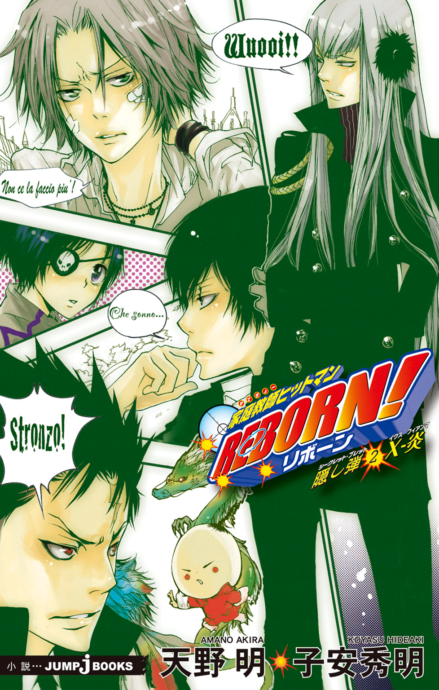
この本は縦書きでレイアウトされています。
また、ご覧になる機種により、表示の差が認められることがあります。
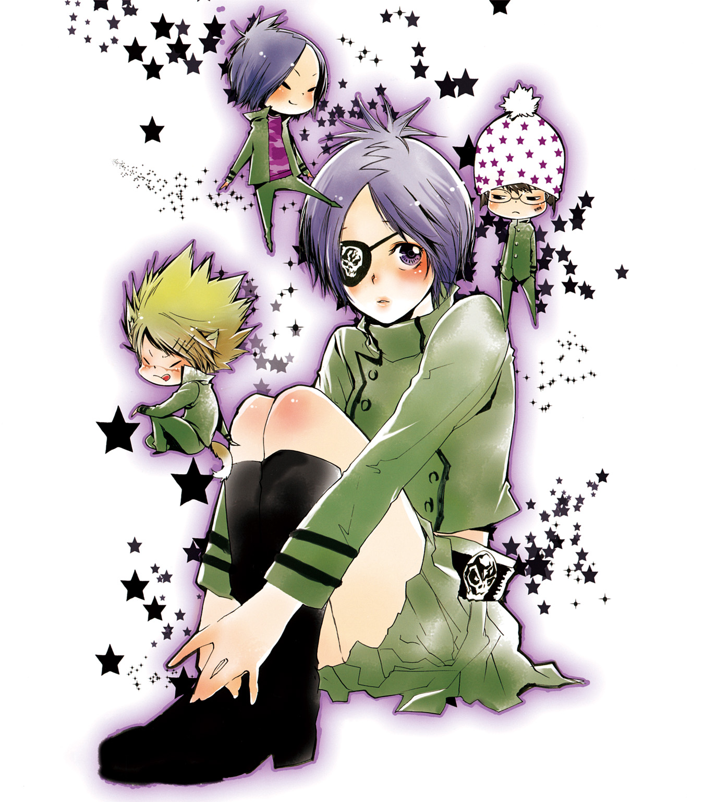
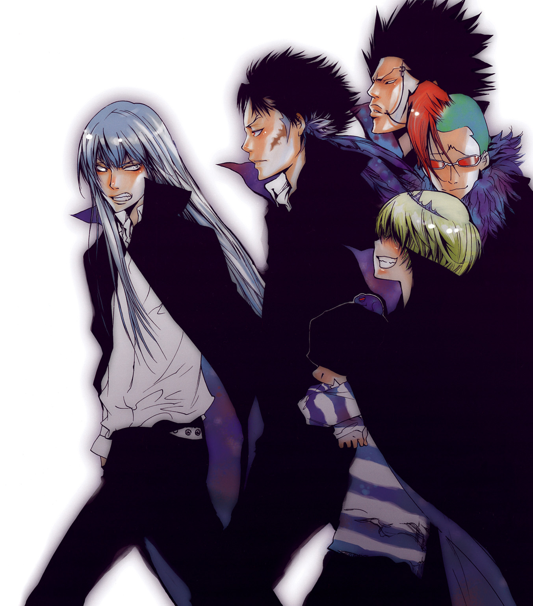
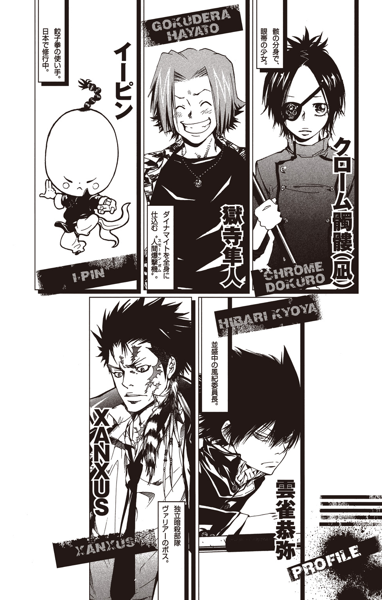
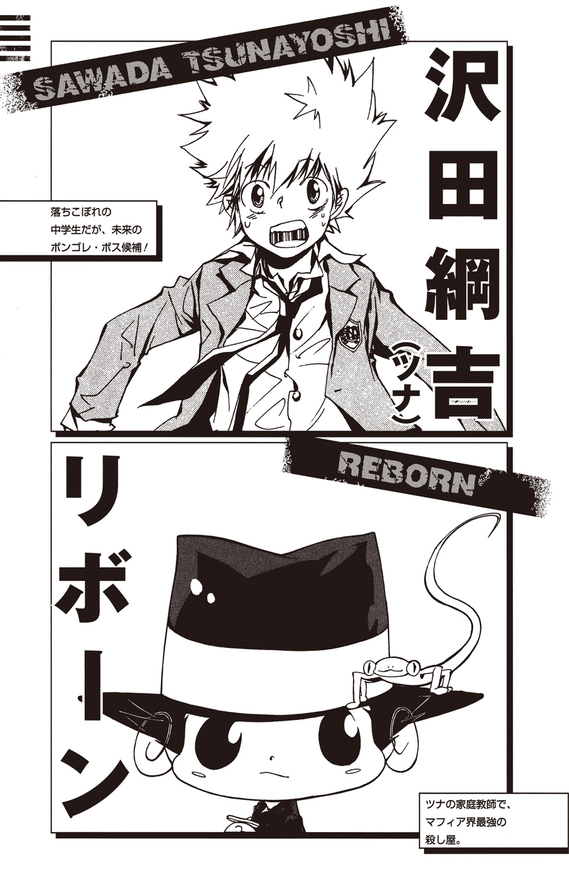
この作品はフィクションです。
実在の人物・団体・事件などにはいっさい関係ありません。
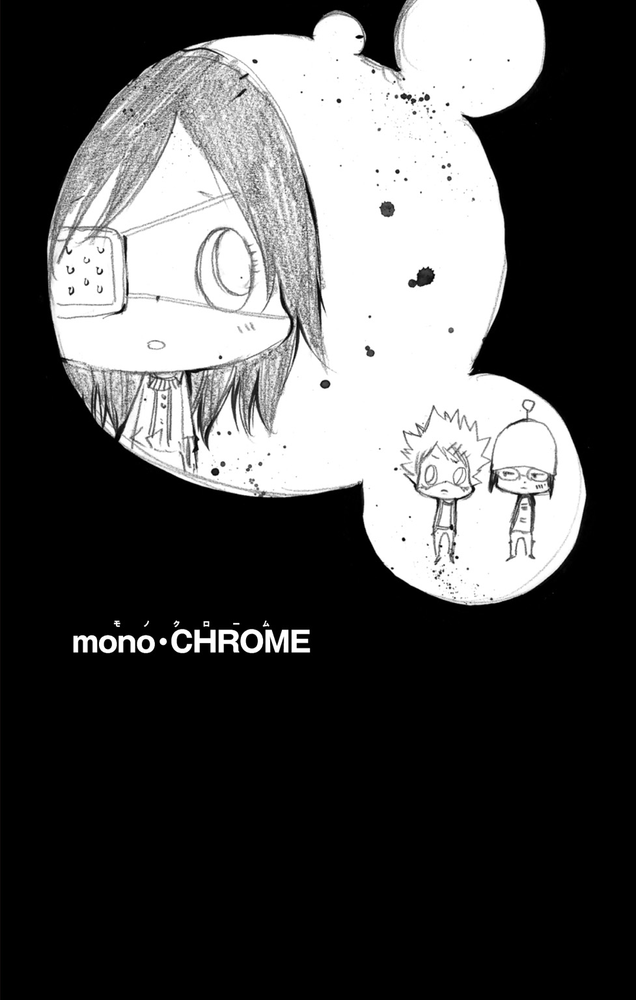
彼女は――涙を流していた。
悲しくは、なかったように思う。
ただ、機械的に、眼球の奥から液体がにじみ出ていく。
ほおを流れ落ちていくそれの感覚は、不思議と彼女を楽にしてくれた。
だから、彼女は涙を流していた。
悲しいという感情は、もうどんなものか思い出せなかった。
現実にかかわるすべてのことが、涙の中へとけていった。
夢と現実のはざまは、だんだんとあいまいになっていった。
すべてが混ざりあって、廻っていく。
果てることなく、巡っていく。
回転木馬――
黄金の円舞曲――
歯車の街――
そして――輪廻。
「...凪――」
未来......それとも過去――
「...凪――――――」
優しくふれる......ふるえる......魂――
やわらかに煙る霧のむこう――
遠くて近いところで彼女を待つ......約束――
「.........ーム――――」
...ゆれる............ゆれる――――
...それは......彼女に刻まれたもう一つの名前――――
「...僕の......かわいい――――」
「......かわいい............クローム――――――」
１
少年は、じっと、だまりこんでいた。
「...........................」
黒曜センターとよばれていた廃墟群の一角。『黒曜ヘルシーランド』と書かれた看板のかけられた建物の中。
少年は、さびのういたベンチにすわって、ツンと目をそらしていた。
ぴんぴんとはね上がった髪、凶暴そうな目、汚れとほつれの目立つ学生服。
そして、口からは、だらりと長い舌をのぞかせている。
「...........................」
彼のそばには、同じく無言で立つ別の少年の姿があった。
ワイルドな外見の少年とは対照的に、影のように静かな少年だった。
眼鏡にニット帽のその少年は、疲れたように口をひらいた。
「理由」
わけを聞かせろ。短い言葉で、自分の意思を伝える。
しかし、相手のほうは、かたくなに口を閉じたままだった。
二人とも何も言わず、ただ時間だけが過ぎていく。
五分......十分......――
「......んんんんんん......んぬなぁぁぁぁぁっ！ らしゃぁぁぁぁぁぁぁっ！」
先に沈黙に耐えられなくなったのは、ワイルドな少年のほうだった。
「なんなんらよ、柿ピー！ オレのことじ―――――――っと見らってよぉ！」
「..................」
「あんたはあれれすか！ どっかの山のエラ―――いお寺の仏像さんれすか!? 国宝級メガネれすか！！！」
「..................」
「らって、しかたなかったんらよ。こいつらが店の前で『クフフフ』って言ってたから思わずさぁ」
まばたきもしなかった眼鏡の少年が、ピクリと反応する。
「......何が、言ったって？」
「こ・い・つ・ら・が！ びょん！！！」
すわっていたベンチから勢いよく立ちあがり、少年は足もとを指さした。
そこに山のようにつまれていたのは、緑と黄色のトロピカルな色をした果実で――
「......言わない」
「んあ？」
「パイナップルは、そんなことは言わない」
「言ったんらって！ このナッポーらがまとめてクフフフって......」
バシュッ！
「っ......痛ァァ―――――――――ッッッ！！！」
とつぜんの激痛に、少年は悲鳴をあげて飛びあがった。
いつの間にか、眼鏡の少年の手には、ヨーヨーに似た『ヘッジホッグ』とよばれる暗殺武器がにぎられていた。
そこから発射された針が、ワイルドな少年の尻につき刺さったのだ。
「なっ、なんれ、毒針ブッ刺してんらびょん！！！」
「いまのは......毒じゃない......」
「うっへーっびょん！ ドクだろうがなんだろうが、またオレにブッ刺しやがったら、てめータダじゃ......」
「毒のほうにしようか？」
冷たい殺気のこもった声に、少年の怒声がとまる。
「......う......あ............えーと............ち、ちょい待つびょん」
少年は、あたふたしながら大量のパイナップルをかかえあげると、全速力でその場から逃げ出していった。
「............めんどい」
静かになった廃墟で、眼鏡の少年がつぶやく。
どうして、このようなことになったのかと言えば――
一人で街に出ていたあいつが、なぜか食べきれないほど大量のパイナップルを買ってきてしまい、返してこいと言った彼とケンカになって――
「........................」
――ちがう。
そんなことが、本当の理由ではない。
いらだっていたのだ。
眼鏡の少年・柿本千種も、相棒の城島犬も。
「......骸様......」
六道骸。
その右目に『六』の文字を刻み、幻覚を始めとした六つの力『六道輪廻』のスキルをもつ少年。
犬と千種は、彼と同じエストラーネオファミリーというマフィアの人間だった。
しかし、いま、そのファミリーはこの世に存在しない。
まだ幼かった骸が、すべての大人たちを殺し、壊滅させてしまったのだ。
裏社会の仁義に反する非道な兵器開発を行っていたエストラーネオは、ついには身内の子どもまで実験体にえらんだ。
その子どもたちの中に犬や千種、そして骸がいたのだ。
いつ命を落としてもおかしくない状況から救ってくれた骸に、犬と千種は忠誠を誓い、彼の野望のために働くコマとなった。
世界を変える――そのためにまずマフィアたちを殲滅する。
エストラーネオの身内ということで、他のマフィアからも命を狙われていた犬と千種は、骸のその計画によろこんで従った。
しかし、計画の核となるはずだった有力マフィア『ボンゴレファミリー』の10代目ボス強奪作戦において、骸たちは大きな敗北を喫してしまう。
そして彼らは、マフィア界の掟の番人である復讐者に拘束され、肉体的精神的に想像をこえる苦しみを味わわされることとなった。
しかし、
――いっしょに来ますか？
エストラーネオを壊滅させたときと同じ――骸はふたたび犬と千種にその言葉をかけ、地獄のような場所から救い出してくれた。
その代償に......骸は――
「..............................」
千種は、自分の足もとに、パイナップルが一つ転がっているのに気づいた。
犬が見落としていったものだろう。
それを手に取った千種は、もう一度、彼の名をつぶやいた。
「......骸様」
こたえは、なかった。
２
「っらく、柿ピーのやつ、なにマジ切れしてんらびょん。もっとメガネとか食べてカルシウム補給しろっつーの」
夕方の公園。
城島犬は、芝生の上に寝転んで、赤くそまっていく空を見つめていた。
と、その口から、外見に似あわない弱々しいため息がこぼれた。
「骸さん......」
十日前――
犬と千種を復讐者の牢獄から逃がすための囮となって、ふたたびとらわれてしまった骸。
彼を助けるために、二人は無謀ともいえる救出作戦を実行しようとした。
その直前だった。
仮眠中だった犬の夢の中に――骸があらわれたのは。
――もう一人の僕をさがしなさい。
千種も、同じメッセージを受け取っていた。
骸の特殊な能力により、精神世界を通じて下された命令。
とつぜんのことに二人はとまどったが、骸からの命令は絶対である。
救出作戦を中断した二人は、こうして骸が指示した場所――
日本へと、まいもどってきたのだ。
「なんなんらよ、もう一人の骸さんって......ぜんぜん、わけわかんねーびょん」
犬と千種は、睡眠や食事の時間もけずって『もう一人の骸』に関する情報をさがしもとめた。
しかし、手がかりは何一つつかめなかった。
「......骸さん............」
まぶたが、ゆっくりとおりていく。
つかれに身をゆだねるようにして、犬はスッと眠りに落ちた。
犬にとって、忘れられない骸との思い出がある。
それは、悪魔のような人体実験を行ってきたエストラーネオファミリーから逃げ出して、骸や千種とむかえた最初の夜のことだ。
犬と千種は、人気のない裏通りのゴミ捨て場に隠れ、ただふるえていることしかできなかった。
二人を支配していたのは、恐怖。
物心ついたときからモルモットとしてあつかわれ、逆らえば即座に死、逆らわなくともいずれは死。その恐怖から、ほんのわずかな時間では、ときはなたれるはずもなかった。
いまこうしている間にも、道路のむこうの暗闇から、マフィアの追っ手があらわれるのでは――
そして、また自分たちは、あの地獄へつれもどされるのでは――
彼が姿をあらわしたのは、そんな恐怖が頂点に達しようとしていたときだった。
――！！！
声にならない悲鳴をあげる犬。隣の千種は、声もなく意識を失う。
しかし、あらわれたのは追っ手ではなかった。
骸だった。
何も言わずにふらりと姿を消していた骸が、もどってきたのだ。
その手に、赤く熟したたくさんの林檎をかかえて。
骸は、いつもうかべている薄笑いのまま、犬に林檎を一つさし出した。
腹がせつない音をたてたが、犬はその林檎をうけとろうとはしなかった。
エストラーネオの大人たちを皆殺しにし、自分たちを外へつれ出してくれた骸のことを、犬はまだ完全に信用していなかった。
これは、何かの罠なのではないか？
長年にわたって刻まれた恐怖が、当然ともいえる警戒心を彼に植えつけていた。
――食べないのですか？
骸は、特に残念そうでもなく言うと、手にした林檎を自分の口に近づけた。
皮のはじける音が、犬の耳をふるわせる。
すこしずつ、すこしずつ......小さな唇によって食べられていく林檎。
犬は、そこから目が離せなくなった。
あとからあとから口の中につばがわいてきて、それはだらりとのびた舌を伝って、地面にまでこぼれ落ちた。
――食べなさい。
気がつけば、犬の目と鼻の先に、真新しい林檎がつき出されていた。
犬は林檎を手に取った。
かじった。何のためらいもなく。
それからあとは、ひたすら夢中になって林檎の山に挑んでいき、存分に空腹を満たしていった。気づけば、千種もまた犬と同じように林檎にくらいついていた。
あのときの林檎の味は一生忘れない。
忘れられるはずがない。
それは――骸との契約だった。
「......ん」
寝起きで頭がぼうっとするなか、うすれゆく夕日が犬の瞳をさす。
日が完全に落ち切っていないところを見ると、まどろんでいたのは長い時間ではないようだった。
と――
「んあ？」
犬は、気づいた。
夕焼け空をバックに、誰かが自分を見おろしていることに。
「ん？ んんんん!?」
さらに、自分の頭の下に、さっきまでなかったはずの、やわらかくてあたたかなとても心地のいいものが――
「んなぁぁぁぁぁぁぁぁぁぁぁぁぁぁぁぁぁぁぁぁぁぁぁぁっ？！！！」
犬はおどろきの声をあげて、その場に跳ねおきた。
「ひ、ひひ、ひざ......ざざざざざざざざ......」
初めてだった。他人にひざ枕をされるなんて。
いくら疲れていたとはいえ、見知らぬ他人をここまで近づけてしまったことが、自分で信じられなかった。
「........................」
犬と年の変わらないくらいのその少女は、きょとんと犬を見つめていた。
どことなく地に足のついていない、ふわふわとした印象の女の子だった。
飾り気のまるでない地味なブラウス、しばらくカットされていなそうな長い黒髪、前髪からのぞく大きくて丸い左目。そして右目は、治療用の眼帯でおおわれている。
「ななっ、なんだよ、てめぇはぁっ！！！」
少女を自分から遠ざけようと、犬はとっさに手をつき出した。
「あっ......」
ドン。
あせっていた犬の手は、少女の額に命中してしまった。
少女は、無抵抗に、こてんと後ろに倒れた。
「たっ、倒れてんじゃねーびょん！ これくらいで、おまえ......」
「..................」
少女は何も言わなかった。
倒れたまま、ぴくりとも動かなかった。
「っ!?」
――死んだ!? いやまさか、これくらいで死んだりするはずが......。
「のあっ！」
ひょこっ。少女は、何の前ぶれもなく身体をおこした。
「............痛い......」
額をさすりながら、少女は感情のない声でつぶやいた。
「........................」
あぜんとしていた犬は、ハっと我に返り、
「おまえ、誰なんだびょん!? なんれ、オレのこと......オ、オレのこと......」
頭が混乱して何を言っていいかわからず、いらだたしそうに頭をかきむしる。
「あーっ、もう、とにかく、なんれオレにあんなことしてたびょん！！！ なんれびょん！！！ なんれらびょん！！！！！！」
「........................」
少女は、ほけっとした顔のまま、
「............死にそうだったから」
「んあっ？」
「死んじゃうと......かわいそう」
思いもかけない言葉に、さらに犬はあたふたして、
「なっ、なんらよそれ？ オレはそこらへんの野良ネコか何かかっつーの！」
「..................」
「そんな『ちがうの？』みてーな目で、オレを見るんじゃね―――っ！！！」
犬は、やり場のない怒りをぶつけるように、じたばたと暴れまくった。
おかしい！
このオンナは、絶対におかしい！
女性にくわしいとはとてもいえない犬だったが、それでも断言できた。
目の前にいるこの！ この、わけのわからないオンナ！
こいつは、どこの誰が何と言おうと絶対に、
くぅぅぅぅぅぅぅ............――
「......う」
犬のじたばたが、ぴたりと止まった。
「........................」
ほんのり顔を赤くして、おそるおそる少女のほうを見る。
「............『くぅー』？」
「！」
小首をかしげた少女の言葉で、犬の顔がさらに赤くなる。
聞かれていた......。
恥ずかしさのあまり、犬はその場にうずくまってしまう。
「......おなか......すいてる？」
「べっ、べべ、別におまえには関係ねーっつーか......」
「......死んじゃう」
「だから死なねーっつーの！！！ 何度も勝手に死にかけあつかいすんなっつ―――の！！！ いいか！ オレはおまえみたいなヤワなオンナとちがって......」
犬の言葉が途切れる。
「..................」
少女が無言で犬の目の前にさし出した物。
それは、しずむ夕日に負けないほど赤く熟した林檎だった。
「あ......」
林檎――
あのとき、骸がくれたのと同じ......宝石のように輝く果実が――
考えるより先に、手がのびていた。
少女がもった林檎にかじりつき、我を忘れてかみくだいた。
「っ！」
犬は、涙を流していた。
自分でも気づかないうちに、おどろくほど大粒の涙がこぼれ落ちていた。
「あ......なっ......なんらよ、これ......な、なんれ......なんれ......」
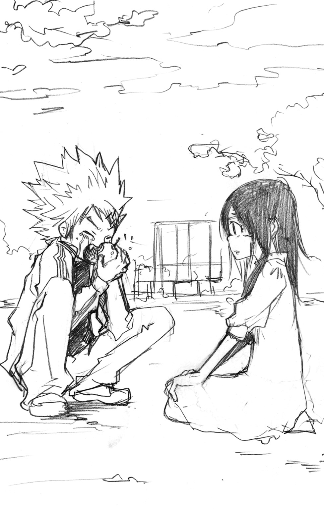
犬は汚れた服のそでで乱暴に顔をぬぐい、少女に背をむけて走り出した。
涙をぼろぼろこぼしながら、彼は走った。
わけがわからなかった。
本当に......わからなかった。
３
時計の針が、十二時半をさした。
廃墟の中で、唯一動いていた掛け時計。
月明かりに照らされたそれを見つめながら、犬はぼんやりした顔で、コンクリートむき出しの床の上にすわっていた。
「はぁ............」
気がつくと、眼帯の少女のことを思いうかべている。
あのときの自分が、自分で信じられない。
初めて会った見知らぬ女の林檎にかぶりつき、しかも涙まで――
（忘れるびょん......あんなことあるはずねーびょん......ぜってー、なんかのまちがいだびょん......）
マフィアから逃れ、裏社会で骸たちとともに生きるようになってから、犬は自分の手でつかみとった物以外、決して食べようとはしなかった。
唯一――骸からあたえられる物をのぞいて。
意思ではなく本能。絶対に変えられない掟であり、骸への忠誠の証。
なのに、あっさりそれをやぶってしまった自分に、犬はどうしようもない悔しさと怒りを感じていた。
こんなことを千種に言えるはずもない。
犬は、帰ってきてから、ずっと一人で苦しんでいた。
（なんれ、オレあんなこと......ちくしょぉ......ちっくしょぉぉ............）
「犬」
「！！！」
突然耳もとで千種の声がし、息が止まりそうなほどおどろく犬。
思わず声をあげそうになった瞬間、千種の手がしなやかに犬の口をおおった。
「......侵入者だよ」
犬と千種は、足音を忍ばせ、廃墟の暗闇の中を進んだ。
無言のままヘッジホッグをにぎりしめる千種。
犬もまた、ポケットの奥の『武器』に指をのばす。すぐに取り出さないのは、その道具には複数の種類があって、状況によって使い分ける必要があるからだ。
まずは、侵入者の正体を確かめる。
二人は慎重な動きで、人の動く気配のするその部屋をのぞきこんだ。
と、
「んああぁぁぁぁぁぁぁぁぁぁぁ――――――――っっっ！？？？？？」
廃墟中にひびきわたる絶叫。
千種は小さく舌打ちし、扉の陰から飛び出した。
そして、部屋の中にいた人影に飛びかかり、一気に押し倒す。
「まっ、待つびょん！ 柿ピー！！！」
「............」
冷たい表情でふりかえる千種。
その手は、油断なく侵入者の首をつかんでおさえこんでいる。
「おまえ......なんれ......」
犬は、その人物を間近に見て、声をふるわせた。
「なんれ、こんなところにいるびょん！！！」
それは――
犬に林檎をくれたあの眼帯の少女だった。
「......知り合い？」
「っ!?」
犬は、勢いよく頭を横にふった。
「こんなっ、やっ、やつ、ややややややや......」
「..................」
千種は、ゆっくりと少女の上から身体をどけた。
「もう一度聞くよ、犬。この女は誰？」
「......そ......そいつは......その............」
「！」
千種の身体に、サッと緊張が走った。
倒れていた少女が、何のためらいもなく身体をおこしたのだ。
そして、床に転がっていたバッグにむかって手をのばす。
「うっ、動くなびょん！ おまえ、どういう状況かわかってんのか!?」
犬の絶叫もむなしく、少女はバッグを引きよせ、その中に手を入れた。
千種の対応はすみやかだった。
彼女が武器を取り出せば、自分たちが危険にさらされる。
千種はくっと手首をしならせると、ためらうことなくヘッジホッグを――
「......っ」
千種の動きが止められた。
背後から、犬に腕をつかまれて。
「......どういうつもり？」
犬は何もこたえられなかった。自分でも、どうしてこんなことをしているのかわからなかった。
「か、柿ピー......オレ......オレ............」
その間に、少女がバッグの中のものを取り出した。
「っ!?」
四角い箱の中につめられた――オレンジ色の鮭の切り身、キツネ色のから揚げ、あざやかな黄色のたまご焼き、白くつややかにかがやくごはん。
それは、どう見ても『おべんとう』以外の何ものでもなかった。
「..................」
あぜんとなってそれを見つめる犬。
おいしそうなにおいに、腹の虫がふたたび元気になき始める。
と、その音に重なるようにして、
「柿ピー？」
「............」
無言で視線をそらす千種。
千種の腹もまた、大きな音をたてていた。
「これ......」
「！」
我に返る犬と千種。
そんな二人にむかって、少女は無表情のまま弁当箱をさし出した。
「お......おい......」
からからに渇いたのどで、犬は声をしぼり出す。
「おまえが......作ったのかびょん？」
こくり。少女がうなずく。
「もしかして......オ、オレのために？」
こくり。少女はふたたびうなずく。
「っ......！」
犬の頭の中が、いままで感じたことのない怒りで爆発した。
「おおっ、おまえ、バカかびょん！！！ なに、わけのわかんねーことやってんらびょん！！！ そそっ、そんなっ、そんな弁当なんか、作ってくれなんて誰もたのんでねーびょん！！！ いきなりもってこられたって、そんなの食べるわけがね――――びょ―――ん！！！！！！」
あたふたしつつ、犬は必死に声をはりあげた。
「....................................」
怒声をうけて、少女はかすかに目をふせた。
「............わかった」
彼女の手から、弁当箱がこぼれ落ちる。
「！」
あまりにとつぜんのことで、犬も千種も指一本動かせなかった。
かわいた音をたてて、床にぶつかる弁当箱。
きれいに盛りつけられていたごはんやおかずが、無残にぶちまけられた。
「..............................」
言葉もなく、立ちつくす犬と千種。
そして彼女は、
「............」
ぺこり。
ちいさく頭を下げて、二人に背をむけた。
小走りに去っていく彼女――
犬は、その背中を、ただ見送ることしかできなかった。
４
眼帯の少女が去った黒曜ヘルシーランドの廃墟。
それからしばらく、犬と千種の二人は、無言で立ちつくしていた。
「......犬」
やがて、千種が口をひらいた。
「......犬は、あの女のことを知ってるね」
無言のままうなずく犬。
「じゃ......あの女は、犬のことをどこまで知っているの？」
「オレのこと？」
それは、意表をつかれる質問だった。
「オレのことって......あいつが何も知るわけねーびょん。だって、今日会ったばっかりなんらぜ？ 名前とか、そういうのらってぜんぜん......」
「だとしたら......おかしなことになる」
千種の目が、いつものするどさを取りもどす。
「あの女......どうして、犬がここにいるって知ってたの？」
犬が、大きく息をのんだ。
「めんどいけど......もう一度聞く。犬はここのことは......」
「し、しゃべってるわけねーびょん！ 言うはずねーだろぉ！ ホントにたまたま会っただけで何も知らねーんらよ!?」
犬の目を静かに見つめる千種。
「彼女はキミのために食料をもってきたと言った。めんどいから理由は聞かない。でも......どうやって、ここのことをかぎつけた？」
「それは......」
「犬は、シロウトに尾行されるほど、まぬけじゃないよね」
「............っ！」
犬が、とつぜん走り出した。
「犬！」
千種の制止の声もとどかず、あっという間に部屋を飛び出す。
（あのオンナ......まさか......）
瞳をゆらしながら、犬はうす暗い廃墟をかけぬけた。
（オレのこと、だましてたのか？ マフィアか復讐者のとこの追っ手だっていうのかよ!? オレにあんな......あんな、ふざけたことしたのも......）
顔を怒りでゆがませ、強く歯を食いしばる。
「許さねぇ......ぜってー許さねぇびょんっっっ！！！」
声をはりあげ、犬は建物の外に飛び出した。
そして、犬歯のするどい上歯の形をしたパーツを取り出し、慣れた手つきで自分の歯に重ねあわせた。
瞬間、犬の身体に変化があらわれる。
逆立っていた頭髪がさらにワイルドに広がり、目がギラギラと輝き、筋肉が一まわりもたくましくなる。
カートリッジ。そうよばれるパーツを装着することで、野生の獣と同じ能力を身につける――それが犬のもつ特殊なスキルだった。
カートリッジにはさまざまな種類があり、いま犬がつけたのは『ウルフチャンネル』という狼の能力をよび出すものだ。
地面すれすれに鼻を近づける犬。
人の一億倍ともいわれるイヌ科の嗅覚は、すぐに眼帯の少女のものであるにおいをつきとめた。
「あっちか！」
地面に手をついた犬は、本物の狼のように大地を蹴って、夜の闇の中を疾走していった。
シャァァァァァァ............――
家の中に、洗い物の水の音がひびいていく。
「.....................」
シンとしずまりかえった広い家の中で、彼女は一人立ちつくしていた。
なべやフライパンをすべて洗い終えても、彼女はそのままキッチンから動こうとはしなかった。
「.....................」
彼が空腹だということを知った彼女は、家に帰って弁当を作った。
しかし、弁当は、食べてもらえなかった。
自分は――また失敗してしまった。
二人と初めて会ったのは、二日前のこと。
そのときは、あたふたしているうちに、二人の姿を見失ってしまった。
それからずっと彼らをさがして、今日、やっと再会できたと思ったのに――
「.....................」
彼女は、立ちつくしていた。
ひらかれたままの蛇口から、水が流れつづける。
いま、この広い家には、彼女しかいない。
母も、血のつながらない父も、めったにこの家には帰ってこなかった。
両親がどこにいるのか、彼女は知らない。
きっと、それぞれの、いるべき場所にいるのだろう。
そして......自分のいるべき場所は――
「.....................」
目の前で、水が流れつづける。
彼女の目が、ゆっくりと閉じられる。
水の音と、夜の闇が、彼女の中に押しよせてくる。
あふれていく......あふれていって......。
すべてが、とけた。
「カンガルーチャンネル！」
歯のカートリッジが、すばやくチェンジされる。
犬は、アスリート顔負けの大ジャンプで、家をかこむ高い塀を跳びこえた。
広い庭に着地した犬は、怒りにギラついた目で、目の前の家をにらみつけた。
眼帯の少女のにおいは、その家の中へと続いていた。
（いるびょん......ここに......あのオンナがぁ............っ！）
犬は、玄関に近づき、大きな扉をいきおいよくあけ放った。
「！」
そして――犬は、闇へと飲みこまれた。
「......馬鹿な」
千種は、『それ』を見つけた瞬間、声を失った。
一人で飛び出した犬を追いかけようとした千種は、黒曜ヘルシーランドの中で足止めをくらっていた。
最初は、ちいさな違和感だった。
廃墟の中の空気――いや、物理的ではない『空間』とでもいうもののゆらぎ。
そのゆらぎの気配に、逆らえない力で引きよせられた千種は――
昨日までは存在しなかったはずの、『それ』を見つけたのだ。
かつて、この廃墟で、骸とボンゴレ10代目候補の少年が戦ったとき――
砕け散ったはずの――『それ』を。
千種は、ふるえる手で、『それ』をつかんだ。
その瞬間、『それ』はにぶいきらめきを放った。
まるで――
永い眠りから、目ざめたかのように。
５
ぱしゃん。
水のはねる音がひびいた。
「......っ！」
いつの間にか、犬の周囲は、足首の高さほどの水で満たされていた。
あたりは真っ暗で、何も見えない。
たったいま入ってきたはずの玄関の扉も、どこにも見つけられなかった。
「なんらよ......これ............」
それは、奇妙な感覚だった。
いきなりの異常な事態に、ふつうならもっと危機感をおぼえていいはずだ。
しかし、犬は、なぜか恐れも不安も感じていなかった。
「！」
暗闇の中に、ふいに明かりがともった。
ぽつりぽつりと、まわりであわく光っているそれらは、この世のものとは思えないほど美しい――藍色の蓮の花だった。
「骸......さん......」
無意識に、その名をよぶ犬。
「......骸さん？ 骸さんなんれすか？ いるんれすか、骸さん！」
彼をよぶ声は、絶叫へと変わる。
ついに見つけた――さがしもとめていた彼の手がかりを。
「骸さんっ！ 返事してくらさいよ！ 骸さん！ 骸さぁぁぁぁぁんッ！！！」
声をはりあげながら、犬は走り出した。
バシャバシャと水を蹴りあげ、蓮の花の光が照らす暗闇の世界を、無我夢中でかけぬける。
感じていた......この果ての見えない闇のむこうに、彼がいると。
「っ！」
前方に、うっすらと人影が見えた。
「骸さんっ！」
犬の速度がはねあがる。
水の上を飛ぶように走り、あっという間に距離をちぢめる。
「骸さぁぁぁぁぁぁんっっっ！！！」
いきおいあまって飛びついた犬は、そのまま相手を押し倒した。
そして――
「だぁぁぁぁぁぁぁぁぁぁぁぁぁぁ―――――――――っ！！！？」
悲鳴まじりの絶叫がほとばしった。
細い背中ごしにまわした手がつかんだのは、かすかな胸のふくらみ。
犬が、後ろから抱きついたその相手は――
「............犬......？」
眼帯の少女は、とつぜん押し倒されたにもかかわらず、何もなかったかのようにぼんやりとしていた。
一方の犬は、赤くなったり青くなったり、まるでこわれた信号機のようになっていた。
「ム......ムムネネネネネネ......ムムクククククムネネネネネネネ............」
「......重い」
「っ！」
犬は、あわてて彼女の上から飛びのいた。
「..................」
少女は、ゆっくり身体をおこすと、水の中にすわりこんだまま、ぽかんとした目で犬を見つめた。
「犬......どうして......」
「どっ、どどど、どうしれって、そ、そんなのこっちが............っ」
あわてて言い返すが、何も考えがまとまらない。
と、少女が、静かにうつむいた。
「......ごめんね」
あたふたしていた犬が、動きを止める。
――ゴメンネ......ごめんね？
どうして、このオンナは、自分にあやまっているのだ？
「！」
眼帯の少女の姿が、ゆらめいた。
「あ......」
あわてて手をのばす犬。
しかし、押し倒したことを思い出し、ふれる直前で止まってしまう。
その間に、彼女の姿は、さらにゆらゆらとゆらいでいき――
霧のように、消えた。
気がついたとき、犬は、玄関に一人で立っていた。
「んなっ!?」
あわててあたりを見回す。
そこは、何もおかしなところのない家の中。
水も、蓮の花も、どこにもない。
そして――彼女の姿も。
「どっ、どこ行きやらった！ なんなんらよ、いまのは！」
返事はなかった。
シンと静まりかえった空気に、犬はごくりと息をのむ。
「......か、かくれてんじゃねーびょん、コラァッ！」
犬は土足のまま、家の中へとふみこんでいった。
キッチン、ダイニング、リビング、客間――手あたりしだいに扉をあける。
しかし、彼女の姿はどこにもなかった。
「く............」
犬に押しよせる不安。
さっきまで自分がいたあの闇の世界はなんだったのか――
どうして、骸が近くにいるような気がしたのか――
そして、あのオンナは、どこへ行ってしまったのか――
「あ――――っ！ もう、何がなんだかさっぱわかんね―――びょん！！！」
「だろうね」
「っっっ！！！！！！」
思いがけない返事に、おどろいてふりかえる犬。
うす暗い廊下にじっと立っていたのは、千種だった。
「かっ、柿ピーっ！！！ おまえっ、いつの間に......」
「犬」
とまどう犬にむかって、千種は口をひらいた。
「......彼女だ」
「あぁ？」
「......彼女だったんだよ............――もう一人の骸様は」
感じる――
静かな闇の中で、自分がとけていくのがわかる。
「........................」
犬――
どうして、彼がいたのだろう。
城島犬と柿本千種――二人といっしょにいてほしいと、あの人に言われた。
でも、自分は、二人に必要とされなかった。
やっぱり、自分ではだめなのだ。
自分は、あの人の力になれない。
この先に待つ戦いだって、役に立てはしない。
そのことが悲しくて......悲しすぎて消えてしまいたかった。
「......骸......様............」
まどろみが、すべてをつつみこんだ。
「バカ言ってんじゃね――――びょんっ！！！！！！！」
深夜の静けさをうちやぶる大声で、犬はさけんだ。
「あっ、ああ、あのオンナが骸さんなんてこと......」
「..................」
がくぜんとする犬を無視して、千種はあたりを見わたす。
「......彼女はどこ？」
「しっ、知らねーびょん！ つか、勝手にどっかに消えやらって......」
「消えた？」
千種の表情がくもる。
「そうか......犬の居場所をつきとめられたのも、すでに力に目ざめていたから......」
「って、一人でなっとくしてんじゃねーびょんっ！ 力とか、なんのことだよ！ もっとオレにわかるよう......」
「......うるさい。めんどい」
「うるさめんどくね―――っつ―――の！！！」
「......時間がない。このままだと......彼女を失うことになる」
「......っ!? う、うしなう？」
「彼女は......骸様じゃない」
「はぁ？ 柿ピー、おまえさっき......」
「骸様以外に、六道輪廻の力は使いこなせない」
千種は、黒曜ヘルシーランドで手に入れた『それ』を通して骸の意思――精神世界に残された骸の記憶の断片を、つかみとっていた。
ただ『もう一人の骸をさがせ』とだけメッセージをあたえられたのも、思念が追跡されるのを警戒し、千種たちに直接この情報を手に入れさせるためだったのだろう。
もうすこし早く気づいていれば、彼女を確実につかまえることができた。
しかし、それは、やはり困難だったというしかない。
彼女が、黒曜ヘルシーランドをおとずれ、その秘めた力が戦いの場に残った記憶と共鳴したことによって初めて――
骸の残した『それ』が、現実の世界にあらわれることができたのだから。
「..................」
答えは出ていた。
彼女を失うことはできない。
なら......やるべきことは一つ――
「......犬............」
千種は、服の内側にしまっていた『それ』をにぎりしめた。
「お！ やっとまともに言う気になったかよ！ さっさと柿ピーの知ってることぜーんぶオレに......」
ドスッ！
「！」
犬は、悲鳴をあげることすらできなかった。
「......柿......ピー......？」
腹部に感じる焼けるような感覚。
それは、すぐにジクジクと広がる痛みに変わる。
「.....................」
視線を、ゆっくりとおろす。
犬の腹に深々とつき刺さっていた『それ』は――三叉の槍だった。
＊
......痛い――
......痛い......痛い.........痛いよぉ......――
犬は、何度も、泣きさけんでいた。
大人たちは、そんな犬を、冷たく見おろしていた。
手術台に拘束され、さまざまな機械とつながれた犬を。
そして、さらなる激痛に、血をはくような悲鳴がほとばしる。
助けて――！
だれでもいい――なんでもいい――！
ここから――この地獄から――！
それは――城島犬という人間に刻まれた記憶。
そして――もう一つの痛みの記憶がかさなる。
......だめ――
......そっちに......そっちに行っちゃ......だめ――！
黒猫を追って、彼女は車道に飛び出した。
まぶしすぎる二つのライトと、耳をふるわせる急ブレーキの音。
瞬間、彼女はいままで味わったことのない衝撃をその身体にうけた。
痛みも何もなく......一瞬ですべてが消えた。
痛みを感じたのは、手術台の上だった。
同時に、すべてが見え、聞こえた。
すでに手遅れと、冷たく見おろす医師たち。
無理をしてまで生かすことを望んでいないと言う両親。
それは......同じ――
大人から――
世界から見放された者の――
「――っ......」
そのときだった。
痛みに満ちた......記憶の世界がゆらぐ。
「―――――――――――――――――――――――――――――――――――――――――――――――――――――――――――――――――――――――――――――――――――――――んあああああああああああああああああああああああああああああああああああああああああああああああああああああああああああああああああああああああああああああああああああああああああああああああああっっっっっ！！！！！！！！！！！！！！！！！！！」
咆哮。
人間の出せる音量をはるかにこえた絶叫。
すべてのゆがみが吹き飛ばされ、白い光に包まれたそこに――犬と、彼女がいた。
彼女が、犬を見た。
犬もまた、彼女を見つめかえす。
「............あ」
犬が、無造作に彼女の手をとった。
彼女がバランスをくずす。
倒れてきた彼女の身体を、犬はそのまま自分の胸でうけとめた。
「......おまえ......ふざけんなよ............」
犬は、すべてを理解していた。
初めて彼女を見てから、どうして忘れられなかったのか――
その一番の理由は――彼女が昔の自分と同じ目をしていたから。
「......ぜってーゆるさねぇ............」
「......っ...」
「......ぜってーに......ぜってーにぃぃぃぃ............」
「こんなとこで消えるなんて、ゆるさねーからな」
犬の身体にもたれていた彼女が、おどろいたように顔をあげる。
その赤くそまったほおに落ちる――熱い雫。
「............あ......」
ちがった。
犬の流しているものは、彼女が知っている涙とはちがっていた。
「......あった......かい............」
指でふれて、そっとなぞる。
彼女は、しみわたっていくその熱に身をゆだね――静かに、目を閉じた。
＊
「..................」
倒れていた犬が、ゆっくりとおきあがった。
腹に刺さっていたはずの三叉の槍はどこにもなく、傷跡すらなかった。
「......犬............」
そばにいた千種が、ほっとしたような息をもらす。
それは、日ごろ感情を表に出さない千種にとって、きわめてめずらしいことだった。
「..............................」
そんな千種を、無表情に見つめる犬。
そして、
「――っ!?」
ボグゥッ！
容赦ないパンチが、千種の顔にたたきこまれた。
眼鏡が飛び、細い身体がくずれ落ちる。
「言ったよな......柿ピー......」
立ちあがった犬は、千種を見おろしながらつぶやいた。
「またオレにブッ刺したらゆるさねーって」
「............え？」
「言ったよなぁぁっ！！！」
「..................」
しばらく瞳をゆらして考えていた千種だったが、
「............ごめん」
その口から、素直な謝罪の言葉がこぼれた。
「フン......」
犬は鼻をならして、千種から顔をそむけた。
そして、目じりに残っていた涙を、乱暴に腕でぬぐいとった。
「あ―――――――――っ！ つか、こいつ！ さんざんオレらのことふりまわしやらって、マジムカツクびょん！！！」
犬のにらみつける先に――赤ん坊のようにおだやかに眠る少女の姿があった。
その胸には、しっかりと三叉の槍が抱きしめられていた。
「なに、スヤスヤ寝れんだびょん！ その槍らって骸さんのだろぉ！ てめぇ、チョーシのってんじゃねーぞ、コラァッ！！！」
彼女の手から、槍を取り返そうとする犬。
しかし、彼女はしっかりとそれをにぎりしめて放さなかった。
「......いや.........」
「『いや』じゃねーっつんらよぉっ！ てめぇ、ブス女のくせに、オレにさからおーって......」
「...............スゥ......」
「って、寝言かよ！ だからおきろってんらよぉっ！！！」
じゃれあっているようにしか見えない二人を前に、千種は、
「......めんどい」
いつもの調子で、ため息をついた。
６
夜が明けるころ、犬と千種は、黒曜ヘルシーランドへともどった。
眠りつづける眼帯の少女をつれて。
「――クローム髑髏」
犬のむかいにすわり、千種が口をひらく。
「骸様が、彼女に刻んだ名前だよ」
「..................」
真剣な顔で、千種の話に耳をかたむける犬。
「裕福な家庭の一人娘。母親は女優。父親は大企業の部長。もっとも父親と血のつながりはない」
「..................」
「十日前、乗用車に激突され、その事故で内臓の一部と右目を失う。そして、生死の境をさまよう魂が、精神世界で......骸様と出会った」
ピクリ。
だまって聞いていた犬が、かすかに反応する。
「彼女には、特別な才能があった。強制的な憑依や洗脳を必要としないで、骸様の精神と能力の器になれる才能が」
「......だから、骸さんにえらばれたのかよ」
「あたりまえだろう」
千種は、冷たいまなざしでこたえる。
「他になにがあるの？」
「......別に」
千種から目をそらす犬。
千種は、何事もなかったように話をつづける。
「いままで話したことは、骸様の槍にふれてわかったことだよ。あの槍は......骸様の精神が形になったものだから」
「それで、オレにブッ刺したのかよ......」
「幻覚の世界へ行くのに、それが一番てっとり早いと思ったから」
悪びれずに言う千種。
「これからは力が暴走することはないと思う......骸様の槍が、力を制御してくれるはずだから」
「..................」
犬の眉間に、深いしわができる。
「なっとくいかねぇ」
「......？」
「あいつは骸さんの力を使える。なのに、なんれ骸さんじゃねーんらよ」
「犬......」
わかっているだろうというように、ため息をつく千種。
いくら精神世界でのつながりがあるとはいえ、骸の肉体そのものはいまだ復讐者の牢獄の中にあるのだ。
「とにかく、オレはあいつをみとめねーからな」
「そう......」
千種が、犬の肩にポンと手をおく。
「つった魚に......エサはやらない」
「そう。つったサカナに......って、ちがうだろうがぁぁぁぁぁぁぁっ！！！」
めずらしくクールな調子だった犬が思わず大声をあげた――
そのとき、
「っ......」
人の気配を感じ、二人同時に目をむける。
そこには隣の部屋で眠っていたはずの少女――クローム髑髏の姿があった。
「..................」
無言のまま、物陰に隠れるようにしてこちらを見ているクローム。
その姿に、犬はイライラした顔で、
「おいっ！ ンなところで何やってんらよ！！！」
「......あの......言いたいこと......あって......」
「言いたいことぉっ!? てんめー、つまんねーことだったら、タダじゃおかねーびょん！！！」
「......じゃ......いい」
「って、気になんだろうがぁっ！ さっさと言えよ、コラァッ！！！」
犬の怒声にピクピクッと身体をふるわせたあと、クロームはちいさく口をひらいた。
「......骸様に言われたの......私......二人といっしょに......戦う......」
「骸様の代わりに戦う」
その瞬間、犬の怒りが爆発した。
「骸さんの代わりだとぉぉぉぉぉぉぉぉぉぉぉぉぉぉぉぉっ！！！！！！」
彼女のもとへダッシュし、
「きゃ......っ」
その頭を、小脇にグイッとかかえこむ。
おどろいてパタパタ手をふるクロームだったが、その抵抗はあまりにかよわいものだった。
「ちょっと犬......」
「止めんなよ、柿ピー！ こいつが骸さんの代わりとかほざくんならなぁ......」
犬はさけんだ。
「きっちり骸さんになってもらうぜぇぇぇっ！！！」
十分後――
「........................」
クロームは、手鏡にうつし出された自分を、ぽかんと口をあけて見つめていた。
一方の犬は、ハサミを手に、得意そうな顔をしていた。
「どうれすよ、柿ピー？」
「............」
あきれたように頭をふる千種。
その視線の先には――骸とまったく同じ髪型にされたクロームの姿があった。
「だてに毎日ナッポーとか見てたわけじゃねーびょん。これくらいよゆーれすよ」
これまでずっとクロームのペースにのせられてきた犬は、やっとお返しできたと言いたそうに、すっきりした顔をしていた。
しかし――
「........................」
静かに手鏡を床におくクローム。
くすん、と鼻をすする音が、犬の耳にとどいた。
「あ......」
しまったという顔になる犬だったが、すぐに強がって腕を組み、
「オ、オレは、おまえが骸さんになるって言うからやっただけらびょん！ いまさらなに言われたって知らねーびょん！」
「..................」
彼女は何も言わず、顔を手でおおったまま隣の部屋へ消えていった。
「......犬」
「なっ、なんらよ柿ピー、その目は!? オレが悪いっつーのかよ！ つか、あいつが骸さんとどんなカンケーがあるかとか、そんなの知ったこっちゃねーびょん！ 悪いのは全部あいつで......って、おわぁぁぁぁっ！」
つきつけられる刃――
いつもどってきたのか、そこには包丁をもったクロームが立っていた。
「てっ、ててて、てめぇっ!? どっからそんなのもってきたびょん！ オレとやるってのかぁ!? 上等らびょん！ どっからでもかかって......」
「食べられないもの......ある？」
「食べられないものぉ!? 何もってこよーとオレは......」
「ごはんに......するから」
そう言うと、彼女はふたたび隣の部屋にぱたぱたと消えていった。
「..................」
ファイティングポーズのまま固まる犬。
そして――二人同時に、腹の音がなりひびいた。
彼女は――涙を流していた。
悲しくは、なかったように思う。
自分の悲しみを消すために流していた涙とはちがうこれは――
何なのだろう。
「............骸様......」
その人の名をつぶやく。
自分に命と......新しい名前と......そして――
かけがえのない大切なものをくれた人――
「..................」
うれしかった。
自分を見てくれて、こうして一人の人間として相手をしてくれる――
居場所のあることが、彼女にはたまらなくうれしかった。
「...ありがとう......骸様......」
彼女は――笑っていた。
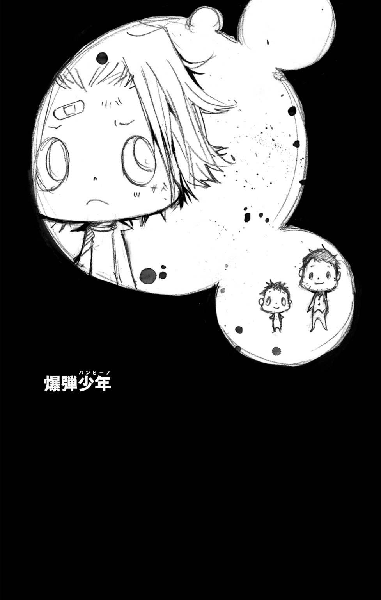
それは――彼がまだ一人きりだったころの話。
１
「..................」
やってらんねーと、隼人は思った。
世界はいつだって自分の思うようにはまわらない、それはわかっている。
でも、頭でわかるのと、感情がついてくるのとは、いつだって別の話だ。
だから、隼人はさけんだ。
「いつまでもその気色悪ぃツラこっちにむけてニタニタ気色悪く笑ってんじゃねーよこのクソヤローがぁぁぁぁっ！！！」
ドゴォッ！
強烈なパンチが、目の前の見知らぬ男にたたきこまれた。
いきおいよく吹っ飛ばされて、隼人の視界から男の姿が消える。
「チッ......」
舌打ちしながら、隼人は身体をおこした。
そこは、見たことのないせまい部屋の、ボロくて汚くてなんだかベタベタした木のベッドの上だった。
「............」
最悪の気分だった。目をさましたらわけのわからない場所に寝ていて、しかもわけのわからない男が自分の顔をのぞきこんでいたのだから。
「どこだよここは......なんだってオレはこんなシケたとこに......」
「痛い！！！」
「うぉっ!?」
不意の大声に、隼人はビクッと身体をふるわせた。
さらに、何ともいえない気持ち悪さ――「痛い」と言ったくせに、その声はなんだかうれしそうにウキウキとしていたのだ。
「痛い！ とても痛いじゃないか、少年！」
そう言って笑っていたのは、たったいま隼人が殴り飛ばした男だった。
床の上に大の字になったまま、やかましいくらいの大声で笑う男を見て、隼人はさらに胸のあたりがムカムカとしてきた。
「笑ってんじゃねぇよ！」
男の笑い声が、ピタリと止まった。
そして、身体をおこし、きょとんとした目で隼人を見つめる。
「どうして笑ってはダメなんだい？」
「つか、逆に、なんで笑わなきゃなんねぇんだよ！ この状況で！」
「そんなことは決まってるじゃないか」
男は、赤くはれたほおをおさえながら立ちあがり、
「キミが痛いからだ！」
「......っ......？」
「あ、まちがえた」
「って、まちがえんな！」
「キミがこんなに痛く感じるくらい力強いパンチを出せるくらい元気だってわかったからうれしかったからだよ！」
「............は？」
なんとなく男の言いたいことはわかったが、それが隼人をますますわからなくさせる。どうしてこの男は、赤の他人の自分が元気だということに、ここまでよろこんでいられるのだ？
「..................」
無言のまま、思わずその男をじっと見つめてしまう。
一言で言えば、圧倒的に冴えない男だ。
年は、二十代の後半、いや三十にとどいているかもしれない。
十二歳の隼人から見れば、どちらにしろオヤジといっていい年齢だ。
で、そのオヤジは、彼のパンチで真っ赤に顔をはらしているにもかかわらず、さっきからニコニコしっぱなしだ。
どう見ても、反撃しようとする気配は感じられない。
「......わけわかんね」
そんな相手のことは無視するに限る。
隼人は、ベッドの端に手をかけ立ちあがろうとした。
そのとたん、身体のあちこちがズキッと痛む。
「............チッ」
思い出した。
そこそこにぎわっている山間のこの街に流れついてきてから、二日目。
治安の悪そうな裏通りを歩いていたとき、隼人は、たまたますれちがった男たちにケンカをふっかけたのだ。
たいした理由はなかったが、それはめずらしいことではなかった。前に住んでいた街でも、隼人はたびたびケンカをくり返す荒れた生活を送っていた。
家を飛び出して一人きりになった八歳のころから、隼人はそういうふうにして生きてきた。たいていのピンチは経験ずみで、そこらへんのワルがたばになってかかってきても負けるつもりはなかった。
ダイナマイトを手足のように使い、いつからか『スモーキン・ボム』とあだ名されるようになった自分に敵はない！
しかし――
そんな思いが、こうして油断をうんだのかもしれなかった。
「クソッ......」
とりわけ痛む後頭部に手をやると、そこには包帯が幾重にもまかれていた。おそらく、そのときの攻撃で意識を失ってしまったのだろう。
そして理由はわからないが、このオヤジの家につれてこられ、しかもケガの手当てまでうけたらしい。
と――
「少年！」
ふいに、オヤジが隼人につかみかかってきた。
「て......てめ......っ」
わけのわからない行動に反応の遅れる隼人だったが、このまま好きにさせるつもりはなかった。
「いいかげんにしやがれぇっ！」
ドガッ！
するどい拳がオヤジの腹にたたきこまれた。
オヤジの顔が苦しそうにゆがみ、その腕から力がぬける。
「どけ！」
隼人はオヤジをつき飛ばし、外への扉に手をかけた。
「ま......待って......」
オヤジは、なおも隼人にむかってふるえる手をのばす。
しかし、隼人のほうに、これ以上つきあうつもりはかけらもなく、足早に部屋を飛び出していった。
ビルの隙間に日が落ち、シケた街にも平等に夜がやってくる。
「......ケッ」
すえたにおいのただよう裏通りを、隼人はイライラした顔で歩いていた。
にぶく痛む傷のせいもあるが、それ以上にさっきのわけのわからないオヤジのことが、隼人をいらだたせていた。
（クソッ......ふざけやがって......）
音をたててつばをはき、目につく看板を蹴りまくり、心の中で思いつく限りの怒りの言葉をならべたてる。それでも、ちっとも気は治まらない。
そして隼人の気持ちとは裏腹に、周囲はにぎやかな音と光で満ちていた。あちこちで目につく酒場やカジノの看板と、そこで楽しもうとやってくる客たちの活気がさらに隼人をイラつかせる。
「うるせぇんだよ！」
とつぜんの大声に、通行人たちはおどろいて隼人を見た。しかし、すぐに自分たちの世界へともどっていく。
隼人の存在なんて、最初からなかったかのように。
「クソが......」
そうだ。他人なんて、みんなクソだ。
そんなこと、イヤっていうほどわかってる。
まっとうな人間はもちろん、表からはずれた裏社会に生きるマフィアすら、自分をうけいれてはくれなかった。
なのに――
（何でだよ......わけわかんねーっつーんだよ......）
何の目的もなく他人を助けるやつなんているはずがない。そう......何の目的もなく――
「！」
隼人の目が、ハッと見開かれた。
あたふたと、着ている服のすみずみまでさわる。
どこにもなかった。少ないとはいえ、隼人の全財産の入った財布が。
「あのオヤジぃぃっ！」
怒りに目をつりあげると、隼人は全速力で、いま来た道を逆走していった。
「うらぁぁぁぁぁぁっ！」
ガァンッ！
強烈なキックで、ボロい集合住宅の半分腐った木の扉が吹き飛んだ。
「出てきやがれぇっ！ てめぇ、ただですむと思ってんじゃねぇぞぉっ！！！」
目を血走らせて、せまい部屋をすみずみまで見わたす。しかし、あの気色悪いオヤジの姿はどこにもなかった。
その代わり、部屋にぽつんと一人でいたのは、
「ガキ!?」
年は、五、六歳くらい。やさしい顔だちの男の子が、ぽかんと口をあけて隼人のことを見ていた。
意表をつかれた隼人だったが、すぐに険しい顔にもどって、
「おい、ガキ！ オヤジはどこに行った！」
「......おとーさん？」
「そうだよ、てめぇのオヤジだよ！ どこ行ったか、さっさと教えろ！」
「..................」
男の子はこくりとうなずいた。
隼人がつれてこられたのは、裏通りのさらにはずれにあるちいさな酒場だった。
「ここか！」
男の子を押しのけ、店の中へと踏みこむ。
「...っ」
息をのんだ。
そこは、うす汚れた外見からは、想像のできない空間だった。
おだやかに流れる空気。場末の酒場によくある暴力的なさわがしさはまったくなく、中にいた客は、みな一つの音に耳をかたむけていた。
店の中央におかれた黒いピアノがつむぎだす音に。
「あ......」
いた。
あの気色悪いニタニタオヤジが、ピアノの前にすわっていた。
別人のように真剣な顔で鍵盤とむかいあうその姿に、隼人は怒っていたことも忘れ、じっと見入ってしまった。
やさしく、そして力強く。
ピアノのつむぎ出す音が、隼人の中へとゆっくり伝わっていく。
「あ......」
満場の拍手が、隼人を現実へと引きもどした。
自分が一曲ずっと聞き入っていたことに気づき、隼人は、とまどったようにその瞳をゆらした。
隣に立っていた男の子が、そんな隼人を見あげ、にっこりと微笑む。
「どうだった？」
「..................」
隼人は、とっさに何も言い返せなかった。
そんな自分が、なんだか負けをみとめたような気がしてしまい、とにかく何か言ってやろうと隼人は必死に――
「少年！！！」
「っ!?」
聞きおぼえのある気色悪い大声に、隼人の顔が引きつる。
あわてて顔をむけると、いつの間にか、すぐ目の前にあのオヤジが立っていた。
さっきまでピアノの前で見せていた凜々しさがウソのような、ガキみたいな笑みを浮かべていた。
「よかったよ！ 無事だったんだ！」
「よ、よるんじゃねえっ！」
怒りよりまず気持ち悪さが先にたって、思わず後ろに下がってしまう隼人。しかし、自分がここに来た目的を思い出し、あわてて声をはりあげた。
「てめぇ、オレの金を......」
「お金なんかどうでもいい！！！」
またも、とつぜんの大声。
真剣なまなざしで見つめられ、隼人はふたたび言葉をなくしてしまう。
「もうだいじょうぶなのかい、ケガは？」
「......え？」
「心配したんだよ。おきるなり、いなくなってしまうから。キミは頭をケガしてるんだ。安静にしていないといけない」
「あ......」
隼人はハッとなった。
さっきオヤジがベッドで襲いかかってきたのは、単に隼人をふたたび寝かせようとしていただけだったのだ。
「それなのに、キミはなんていいコなんだ。手当てしてくれたお礼にと、わざわざお金をもってきてくれるなんて」
「はぁ!?」
「たしかにウチは貧しい！ 貧しすぎる！ 極貧と言ってもなお足りないくらいにド貧乏だ！ いや、しかし！ だからといってキミのような少年からお礼にお金をもらおうなんてそんなことは......」
「お、おい......」
「そんなことを大の大人であるボクが......いや、しかしキミがどうしてもと言うのなら、まぁ考えないことも......それに、ここで断るのも、ある意味失礼というものかもしれないし......あ、いや、カン違いしないでくれ、ボクはお金なんて一ユーロだってほしいようなほしくないようなやっぱりほしいような......」
「いいかげんにしやがれぇ―――――――っ！！！」
ドガァッ！
完全にブチ切れた隼人の蹴りが、オヤジの顔面にたたきこまれた。
「誰がてめぇーみたいなオヤジに金なんかやるか！ 逆だ、逆！ てめぇがオレの金とったんだろぉーがぁっ！ ああンっ!?」
「......キミのお金？」
顔にくっきりと靴あとを残したオヤジは、きょとんとして、
「とってないよ、そんなもの」
「ふざけんな！ てめぇ以外に誰が......」
「キミをボコボコにした人たちじゃないのかな」
「あ」
思わず、間のぬけた声がもれる。
たしかに――よく考えれば、金が目的ならケガの手当てまでする必要はない。
しかし、ここまで来て引き下がるのは、隼人のプライドが許さなかった。
「いっ、言いわけしてんじゃねーよ！ とにかくさっさとオレの金を......」
「はい」
彼の目の前にさし出された――しわくちゃの紙幣。
「キミのお金じゃないのは申しわけないけど、これでよかったら」
「..................」
今度こそ本当に、隼人は何も言えなくなってしまった。
それが――
隼人と、カルロ親子との出会いだった。
２
カルロは、小さな酒場のピアニストだった。
決して多いとはいえない報酬で毎晩演奏をし、その金で息子のニコロと二人つつましやかに暮らしていた。
初めて会ったときの一件から、隼人とカルロ親子の腐れ縁は始まった。
といっても、隼人が街で何かトラブルをおこすたび、頼んでもいないのに一方的にカルロがあれこれとちょっかいを出してくるという関係だったのだが。
そして、この日も、
「......少年」
「......何だよ？」
「一つ、少年に聞きたいことがあるんだけど」
「聞きたいことぉ？」
「キミは、あれなのかな？ その......いわゆる、痛めつけられるのが大好きな、『えむ』とかいうシュミの......」
「ンなわけあっか、ボケ」
「だったら、どうしていつもこういう目にあってるのかなぁ......」
やれやれと言いたそうに、カルロは苦笑した。
せまいビルの隙間からこぼれる夕日が、二人の目にしみる。
隼人とカルロは、裏通りに二人ならんで大の字に倒れていた。どちらも傷だらけで服もボロボロ。乱闘の直後だということは、誰が見ても明らかだった。
やはりというか、ケンカの原因は隼人のほうにあって、肩がふれたとか目つきが気に入らないとか、そんな理由で街のチンピラたちに因縁を吹っかけたのだ。
最初はたった一人で善戦していた隼人だったが、相手が仲間を次々に呼んできたあたりで風向きがあやしくなり、気づけば一方的にやられる展開になっていた。
そこにやってきたのがカルロだ。
カルロは身体をはって隼人を助けようとし、結局いっしょになってボコボコにされてしまったというわけだった。
「つーかさ......聞きてぇのはこっちだっつーんだよ」
「ボクに？ ハハ......照れるなぁ」
「照れてんじゃねーよ。つか、なんで、てめぇはいつもいつもよけいなことしてくんだよ」
「よけいなこと？ 何が？」
「何もかもだっつーんだよ。自分までやられて......バカじゃねーのか」
「だって、それはいつも少年が助けてほしそうにしてるから......」
「バッ、バカ言ってんじゃねぇ！ オレがいつそんなこと言った！」
「言ってるじゃないか......」
「助けてほしい――少年の目は、いつだってそう言ってるよ」
なぜか、言い返せなかった。
そして、隼人の顔が耐えられないほどに熱くなっていく。
「......っ......バカか......」
なんとかそれだけつぶやいて、隼人は顔をそむけた。
カルロに背をむけたまま、痛みをこらえて身体をおこす。ひどく殴る蹴るされたわりには、それほど大きなケガはしていないようだった。
しかし、
「く......」
苦しそうなうめき声が聞こえ、隼人はふりかえった。
そこには、右の手首をおさえ、脂汗をうかべているカルロの姿があった。
「おい......」
「あ......だいじょうぶだよ。ちょっと持病の水虫が......」
「水虫でそんなとこおさえるか、ボケ！」
隼人はカルロに近づき、その腕をとった。
「っ......」
痛そうに顔をしかめるカルロ。真っ赤にはれあがった手首を見れば、軽いケガでないことは明らかだった。
「ったく、何やってやがんだよ......」
どうしようもなくイライラする気持ちを感じながら、隼人はカルロをかかえて歩き出した。
全治二週間。
それが、医者がカルロに下した診断結果だった。
やはりというか、特にひどかったのが右手首のケガで、それはカルロにとってある意味で致命的といえるものだった。
手が動かなければ、ピアノは弾けない。
それは、酒場でのピアノ演奏だけが収入源となっているカルロにとって、かなりキツいことなのはまちがいなかった。
「ったく......マジでバカじゃねぇのか......」
街を歩きながら、隼人は一人毒づいた。
カルロのことを考えるたび、どうしようもなく腹がたってしまう。
もう、あのオヤジが何を考えているのかまったくわからない。お人よしにもほどがあるだろう。
聞いた話――というか、むこうが勝手にしゃべった身の上話によれば、若いころは世界で活躍するプロのピアニストを目指していたこともあるらしい。
しかし、なかなか芽が出ないまま、結婚した相手にも死に別れ、いまではたった一人の家族である息子と貧しい生活を送っているのだそうだ。
（他人に何かしてやれるような状況じゃねぇだろうに......ったく......）
とにかく、このままでは隼人の気が治まらない。
お人よしだろうと何だろうと、他人に借りをつくったままなのはごめんだった。
「..................」
隼人が足を止めたのは、カルロが毎晩ピアノを演奏していた酒場の前だった。いまはまだ日が落ち切る前で、営業は始まっていない。
店の前に立って、迷うそぶりを見せる隼人。
行ったり来たり、何度も近くをうろうろしたあとで――
「クソッ！」
思いきって店の扉をあけた。
うす暗い店内には誰の姿もなく、シンと静まり返っていた。
隼人の目が、店の中央のピアノをとらえる。
カルロがケガをしてから一週間。その間、誰にも弾かれることのなかったピアノは、うっすらとホコリをかぶっているように見えた。
「..................」
ピアノをじっと見つめる隼人。
その脳裏に浮かんだのは、日ごろの情けない姿からはうってかわって、真剣な顔で鍵盤に指を走らせるカルロの姿。
そして......遠い記憶のかなたにかすむあの女性の面影――
「ピアノ、ひけるの？」
「......っ！」
ハッとなってふりかえると、そこにカルロの息子のニコロが立っていた。
そして隼人は、自分でも気づかないうちにピアノのすぐそばまで近づき、その白い鍵盤を細い指でなぞっていた。
「ひっ......弾けるわけねーだろ！」
ウソだった。隼人は幼いころ、何度も多くの人前でピアノの演奏を披露したことがあった。
しかし、それは隼人にとって、決して良い思い出ではなかった。
「オレはただ......」
「ただ？」
「ただ......その......なっ、何でもねぇよ！」
乱暴に言い捨てて、ニコロから顔をそむける。
ケガをしたカルロの代わりに、何でもいいから店で働かせてくれるよう頼むつもりだった――そんなこと、恥ずかしくて言えるわけがない。
そして、隼人は、いまさらながら我に返る。
気の迷いというか何というか、とにかく自分が人のために働こうなんて、どうかしていたとしか思えない。
あのオヤジが勝手に飛びこんできて、それで勝手にケガをしただけなのだ。なのに、自分が何かしてやろうなんて、そんな義理はこれっぽっちもない。
隼人は、軽く頭をふって、店を出ようとした。
「ぼく、ひけるよ」
ニコロが、隼人と入れ替わるようにしてピアノの前にすわった。
「はぁ？ おまえがぁ？」
信じられないという顔をする隼人にむかって、ニコロは不満そうにプッとほおをふくらませる。
「ひけるよ。おとーさんに教わったんだもん」
――おとーさんに教わった。
その言葉は、チクリと隼人の胸につき刺さった。
「聞いて」
ニコロが鍵盤に両手をおいた。
そして、せまい店の中にひびきわたったのは――
「......う」
ちいさな手で、一生懸命に大きな鍵盤と格闘するニコロ。しかし、予想どおりというか、その演奏は『おゆうぎ』のレベルそのものだった。
隼人は、たまらず口を出す。
「おいガキ」
「......？」
「そんな、力いっぱいただ押せばいいってもんじゃねーだろ」
きょとんと首をかしげるニコロ。
「こう？」
「ちげーって。それじゃ、ぜんぜん変わんねーだろーが」
「じゃ、こう？」
「だから、ずっと同じ調子で弾いてどうすんだよ。もちっと、リズムっつーか強弱っつーか......」
「......？？？」
「あー、ちょっと、そこどけ」
隼人は、ひょいとニコロをかかえあげて脇におろすと、替わって自分がピアノの前にすわった。
「まずはちゃんと耳で聴け。話はそっからだ」
ニコロは素直にうなずき、きゅっと目をつぶる。
「いいか？ ここが、さっきおまえが弾いてたとこだ」
そう言うと、彼は鍵盤へと手をのばし――
「............」
その指が、鍵盤にふれる直前で、ピタリと止まった。
かすかにふるえはじめる指。
そのふるえは、やがて隼人の全身にも広がっていった。
「......クソッ」
舌打ちとともに、隼人は手で顔をおおった。
まただ......。
また自分は、この親子にのせられて、ありえないことをやろうとしていた。
「......？」
いつになっても何も聞こえないことをおかしく思ったのか、ニコロが目をひらいて隼人を見つめた。
「どうしたの？」
「......どうもしねーよ」
つかれたようにため息をつくと、隼人はピアノの前から立ちあがった。
とにかく、こんなところからは、さっさと退散するのが一番だ。
しかし、
「カルロ君じゃないかい」
その声は、隼人にむかって投げかけられていた。
「ひさしぶりだねぇ。ケガはよくなったのかい」
店の入り口に立ってニコニコと微笑んでいたのは、鼻の下に立派なひげをはやした上品そうな老人だった。
「おや、ずいぶん顔色もよくなったみたいだね。それに、なんだかちょっと若くなった気も......まるで別人のような......」
「つか、別人だっつーんだよ！」
隼人は、老人にむかって怒りの声を放った。
「おい、ジジイ！ どう見りゃ、オレがあのオヤジってことになるんだよ！」
「おや......？」
そこで老人は、やっと気づいたというように目を見ひらく。
「ああ、申しわけない。いつも、そのピアノの前にはカルロ君がすわっているものだから、つい......」
「『つい』じゃねーっつーんだよ。ったく......」
「ふぅ......カルロ君はまだ出てこられないんだね。彼の演奏を聴くのが、老い先短い老人の数少ない楽しみだったというのに」
「だいじょうぶだよ、おじーちゃん。今日は、このおにーちゃんがひいてくれるんだって」
「そうなのかい。それはよかったね、ニコロ君」
「うん」
「って、おい！」
なごやかに話す二人に、隼人はあわてて割って入った。
「なんで、そーゆーことになってんだよ！」
「だって......聴かせてくれるって......」
「バッ......！ それは、てめぇがへたすぎるから、つい......」
「よかったねぇ、ニコロ君」
「うんっ」
「だから、ちがうっつってんだろーがぁっ！！！」
このままグズグズしていたら、またおかしなペースにまきこまれてしまう。隼人は、足早にニコロと老人の脇をすりぬけ、出口をめざした。
「ゲッ！」
しかし、出ようとしたところで、ちょうど店に入ってきた客の男たちに行く手をはばまれてしまう。
「なんだ、このボウズ？」
「ここじゃ、ママのミルクは出してねーぞ」
「ああンッ!? てめぇら、ふざけてんじゃねぇぞ！ このシケた店ごとふっとばして......」
「こらこら、キミたち。その少年は、カルロ君に代わって演奏してくれるピアニストなんだよ」
「えっ、そうなんスか？」
「そりゃいいや。あいつがいなくてさびしかったからなぁ」
「だから、勝手にもりあがってんじゃねぇよ！！！ オレはそんなつもり......」
「なんだよ、何をさわいでんだ？」
「それが、このボウズがよ......」
ちょうど開店の時間になっていたこともあり、入り口にはどんどん新たな客がやってきた。その人波に押しもどされるようにして、隼人はふたたびピアノの前に立たされてしまう。
「う......」
店中の視線が、隼人とピアノにそそがれる。
隼人は、この状況をなんとかしようと必死に頭を回転させたが、何もいい考えはうかんでこなかった。
「..............................」
そのまま、じっと立ちつくす隼人。
自分にむけられる視線を意識するたび、胸がドキドキと高鳴って、顔中がたまらなく熱くなる。
だが――それは不思議と、イヤな感じではなかった。
すべての視線に、純粋な期待の気持ちがあった。いつも街角でむけられている邪魔なものを見るような目は一つもない。
それが......なんだかとても――
「......クソッ」
隼人は、ガシガシと頭をかきむしった。
胸の奥から、もやもやと悔しい気持ちがわきあがってくる。
なんだって、自分は逃げることばっか考えてるんだ？ どうして、ガキやジジイやオヤジどもから逃げる必要がある！
「......やってやろうじゃねーか」
覚悟を決めた目でつぶやくと、隼人はピアノの前にすわった。すかさず、まわりから口笛や歓声がひびいてくる。
「いくぞ......」
しかし、鍵盤にむけて指をおろそうとした瞬間、ふたたびさっきのふるえがやってきた。
「チッ......こいつ......」
歯を食いしばり、必死に指のふるえを止めようとする。
そんな隼人を、店にいる全員が静かに見つめていた。それはまるで、家族が立ちあがろうとする赤ん坊を見守るような、不思議な一体感だった。
「......っ」
止まった。
波が引くように、ふるえがおさまっていく。
そして、隼人の細い指が、白雪のような鍵盤にふれた。
ゆっくりと......繊細で優雅な旋律が流れた。
３
いつだって、感じていた。
だから、隼人は、そこにとどまっているわけにはいかなかった。
「行かないで、隼人！」
家を飛び出したときの姉の声は、いまでも耳に残っている。その気になれば、力ずくで止めることなんて簡単にできたはずだ。
なのに、彼女は、それをしなかった。
「こんなところにいられっかよ！ こんな......」
そんな彼女にむかって、隼人は言い捨てた。
「おふくろを殺した家によ！！！」
後ろも見ずに走った。
こわかった。
何がこわかったのかは、はっきりわからない。
ただ、感じていた。自分の一言が決定的に、何かをこわしてしまったことを。
「隼人ぉ―――――――――っ！」
悲痛なさけび声だけが、隼人をどこまでも追いかけてきた。
どこまでも......どこまでも......――
「あ、おきた」
まぶたをあけると、オヤジそっくりのお人よしな笑みをうかべているニコロの顔があった。
昼間ふらりとカルロの家にやってきて、昼下がりの陽気に負けて眠ってしまったことを、隼人は思い出す。
「もう、ゆうがただよ。おみせ、はじまっちゃうよ」
「はぁ？ ンなこと、オレに関係ねーだろーが......」
不機嫌そうにつぶやく隼人。昼寝していたところを無理におこされたせいもあるが、それ以上にズキズキとくる腹痛が彼の機嫌を悪くさせていた。
昔、三歳年上の姉におかしな料理を食べさせられて以来、隼人はその顔を見るだけで腹をこわしてしまうというトラウマを刻まれていた。
（夢で見てもこうなるのかよ......クソッ）
姉とは、八歳までいっしょに暮らしていた。隼人が一人で家を飛び出すのを、最後まで止めようとしてくれたのは彼女だけだった。
「............チッ」
隼人はさっさと夢のことを忘れようと、カルロの家のボロいソファーからいきおいよくおきあがった。
シケた酒場には、あいかわらずいつものシケた客が集まっていた。
「おっ、少年じゃないか」
「あいかわらず目つき悪ぃな、少年」
「うるせーっ！ ヒトのことを『少年』『少年』言ってんじゃねーよ！」
どなってにらみつけてやったが、返ってきたのはあたたかな笑い声だけだった。
「ったくよ......」
ブツブツ言いながら、空いている席に腰をかける。
店の中では、ちょうどカルロがピアノを弾いているところだった。
右手首のケガはあれから順調に快復し、数日前からこうして酒場での演奏を再開していたのだ。
隼人はほお杖をつき、だまってカルロの演奏に聴き入った。
「........................」
――なつかしい。
そんな想いが、胸の奥からわきあがってくる。
カルロと出会うより、はるかに昔。まったくちがう曲、まったくちがう弾き方なのに、それは隼人の記憶の奥に眠る旋律をよびおこして――
「少年」
夢からさめたように、ハッと顔をあげる。
演奏は、いつの間にか終わっていたらしい。目の前には、いつも変わらないお人よしな笑みをうかべるカルロがすわっていた。
「どうだった、少年？」
「だから、その『少年』っつーのやめろって何度も言ってるだろーが。店にいるやつらも、みんなマネして『少年』『少年』って......」
「じゃあ、中年？」
「『じゃあ』じゃねぇ」
「そういえば、ボク、まだ少年の名前を知らなかったよね。ハハ......」
苦笑しながら、鼻の頭をかくカルロ。
「まぁ、そんなことはおいといて」
「おいとくな」
「実は、少年にちゃんとお礼を言いたくてね」
カルロは身を乗り出して、隼人の手をにぎった。
「どうもありがとう」
「な......なんだよ。そんなこと言われるおぼえなんて......」
「ハハ......あいかわらずテレ屋だなぁ」
「っ......！ バ、バカにしてんのか、オラぁっ！」
思わずムキになる隼人の目の前に、スッとちいさな箱がさし出された。
「......なんだよ、これ？」
「お礼。ボクがいない間、代わりにピアノを弾いてくれたことの」
とたんに、隼人の顔がカーッと赤くなる。
「ざっ、ざけんな！ 別にてめぇのためにやったんじゃねぇよ！ あれは、なんつーか、なりゆきっつーか......」
「でも、あんまり評判よくなかったんだよねー。店のマスターも、お客さん減っちゃったって言ってたし」
「な......っ!?」
「でも、気にしないで。キミがお客さんを逃がしたぶん、ボクがこれからがんばって取りもどすから。素人は素人なりにがんばったと思うけど、まぁ、結果は結果だから、そーゆーことで」
「って、なんのフォローにもなってねぇぞ、おい！」
バンとテーブルをたたいたあと、隼人は気になるようにちいさな箱をチラリと見た。
「で、何なんだよ、この中身は？」
「ボクの宝物。世界に二つとないテープなんだ」
「テープって音楽のか？ つか、いまどきテープって」
「こっそり録った幻のピアノ演奏なんだよ。五年くらい前で、そのとき彼はまだ七歳だったかな。とにかくすごい子で名前を......」
「獄寺隼人君っていうんだ」
その瞬間――
隼人の呼吸は、完全に止まっていた。
「いまでも忘れられないよ。従来のスタイルを完全に超越した前衛的な演奏。ムチャクチャなようでありながら、不思議な統一感で人をひきつける。あれは誰にもまねできないようなすばらしい演奏だったよ」
「..................」
「でも、あれ以来、なぜかまったく表に出てこないみたいなんだ。何かあったのかなぁ？ 成長した彼なら、もっとすばらしい演奏を聞かせてくれるはずなのに」
「..................」
「実を言うとね......最初キミを見たとき、その隼人君に似てるなって思ったんだ。だからこれも何かの縁だと思って......って、何やってるの？」
隼人は、テーブルにつっぷしたまま、ちいさくふるえていた。
カルロは、きょとんとした顔で首をひねる。
「ひょっとして、またケガでもしてるのかい？ 最近はケンカしなくなったって聞いてたから安心してたのに......」
「うるせーよ！！！」
とつぜんの大声。
カルロだけでなく、まわりにいた客たちもおどろいた顔をむける。
「......少年？」
顔をあげた隼人は、きつく歯をくいしばっていた。
押しよせてくる何かの痛みに、必死に耐えようとするかのように。
と――
こわばっていた身体から、力がぬけた。
隼人は小さなため息を落とし、席を立った。
「あばよ」
目もあわせずにそれだけを言って、彼は店から出て行った。
そして――
彼は、二度とその店にはもどらなかった。
４
カルロのいた街を離れて、一か月がたった。
別の街に流れついた隼人は、そこでふたたび荒れた生活を送るようになっていた。
そのことで、特に感じることはなかった。
元にもどっただけだ。自分らしい、自分のような人間が生きる世界に。
「キミが『スモーキン・ボム』だな」
そんな、ある日のことだった。
黒服の男たちが、隼人のもとをたずねてきた。一目見て、カタギでないということを感じさせる相手だった。
「何か用かよ？」
ポケットにしのばせたダイナマイトへ手をのばす隼人の前で、男たちは敵意はないというように手を広げてみせた。
「はじめまして。自分の名前はグリッジョ。このあたりを仕切っているファミリーのものだ」
「マフィアか......」
彼の表情が険しくなる。
裏社会で生きるため、彼は何度もマフィアの一員になろうとしたことがあった。
しかし、その反応は冷たいものだった。
どのファミリーも彼のような子どもを相手にはしてくれず、そのことで隼人は怒りと不満をつのらせていった。生活が荒れたことでさらにマフィアの態度は冷たくなり、シマを荒らす厄介者として力ずくで追い出されたこともあった。
「おいおい、そんなにこわい顔をしないでくれ。キミのウワサは、よく知っているんだ」
「だから、何だっつーんだよ、あぁ!?」
「キミにぜひ、我がファミリーに入ってほしい」
それは、予想外の言葉だった。
思わず「......オ、オレに？」と言ってしまい、あわてて表情を引きしめる。
「ふっ、ふざけんじゃねぇ！ いきなりそんな......」
「その代わり、キミに仕事を一つ頼みたい」
――来た。
そんなことだろうと思った。ただで、うまい話なんてありえるはずがない。この世の中には、利用するかされるかしかないのだから。
「......で？」
隼人は、グリッジョと名乗ったその出っ歯の男を、油断なく見つめる。
「んだよ。オレにやらせてー仕事ってのは？」
「うける気になってくれたのかい。話が早くて、自分としても助かる」
グリッジョは、小さくヒヒヒッと笑った。その笑い顔は、裏通りでよく見かけるネズミにそっくりだった。
「カン違いすんな。やるかやんねーかは、てめぇの話しだいだ」
「おや。ずいぶんと強気だな、スモーキン・ボム」
グリッジョは、下からのぞきこむようにして、隼人に顔を近づける。
「その強気なところもたのもしい。さすが、ちいさいころからたった一人で、裏社会を生きてきただけのことはある」
「..................」
「自分には人を見る目がある。キミのダイナマイトの腕を聞いてスカウトしようと思っていたが、実際会ってみてますます気に入った。キミならきっと......」
「いいから、さっさと言えや！ そんな、鼻がまがりそうな見えすいたお世辞なんかいらねーんだよ！」
「スモーキン・ボム」
いきなり、グリッジョが手をにぎってきた。
真剣な目がまっすぐにむけられ、思わず隼人は息をのむ。
「我々の敵は、この国の古きものだ」
何を言っているのかわからなかった。しかし、熱のこもったその語り口に、隼人はだんだんと引きこまれていった。
「古きものは、社会を腐らせてしまう。伝統やしきたりなどという非合理的な考えで、新しいものを次々と否定してしまう。それは、キミも経験しているだろう」
「え......っ？」
「キミは何度もマフィアに入ろうとして、それを拒否されてきた。日本人の血を引いているからとか、ピアノを弾くような弱々しいやつだからとか――そんな、くだらない理由でな」
「............」
「しかし、我々のファミリーはちがう！ 伝統などというものにしばられ、本当に力のあるものをこばんだりはしない。そう......キミのような若者こそ、我々には必要なのだ！ だから......」
「はっ、放せよ！」
隼人はにぎられた手をふりほどき、グリッジョから目をそむけた。
「だ......だから、何だっつーんだよ......そんなこと......いきなり......」
「我々の目的は同じだ。生き残るために、自分たちを否定する古きものを倒さなければならない。そうだろう？」
ふたたびグリッジョが、隼人の手をにぎる。
「........................」
隼人は――それを、ふりはらえなかった。
仕事は、思っていたより簡単に終わった。
とあるコンサートホールに、時限式のダイナマイトをしかける。隼人がしたのは、それだけだった。
目的は、敵対するマフィアへのけん制。
明日そのホールで行われる演奏会は、敵対するマフィアのボスが主催するもので、それを台無しにすることでメンツを失わせようというものだった。
――やつらにとっては、そういうことが一番効き目があるものだ。恥をかかせて冷静さを失わせる。そうすれば、いくらでもつけ入るスキができる。
グリッジョは得意げにそう言っていたが、正直、隼人はセコい仕事としか思えなかった。
しかし、これでやっとマフィアの一員になることができる。
昔からずっとあこがれ続けた――イタリア裏社会の英雄であるマフィアに。
大きな仕事は、これからいくらだってできる。それを成功させるだけの実力が自分にはある。
部下を引きつれ、さっそうと歩く未来の自分の姿を想像して、ひさしぶりに隼人の口もとに笑みがうかんだ。
と、
「おにーちゃん？」
聞きおぼえのある声に、隼人はふりかえった。
そこにいたのは、ここにいるはずのない相手だった。
「ニコロ......」
「やっぱり......おにーちゃん」
ニコロは小走りにかけよると、きゅっと隼人の脚に抱きついた。
思いがけない再会に何も言えないでいると、ニコロはいまにも泣き出しそうな顔で隼人を見あげた。
「なんで、いなくなっちゃったの？」
「う......」
「なんで？」
何の迷いもなく、ただ心の底から、隼人のことを心配してくる瞳。
そのまぶしさに負けるように、隼人は視線をそらす。
「おにーちゃん」
ちいさな手が、ゆさゆさと隼人の身体をゆする。
隼人の顔が、だんだんと苦しそうにゆがめられていき、
「うるせ――っ！」
いきなりのどなり声に、パッと脚をつかんでいた手が離れる。そのままニコロはよろよろとあとずさりし、力なく尻もちをついた。
「おにい......ちゃん......」
涙でふるえる声を背中にうけながら、隼人は歩きはじめた。
絶対にふりかえらない――
そんな決意とともに、強く唇をかみしめながら。
５
目がさめたとき、道の上にまき散らかされた生ゴミのにおいが鼻をついた。
最低の気分だった。
「......っきしょお......」
近くの壁につかまるようにして、なんとか立ちあがる。昨夜は、倒れるまで裏通りにある店という店をまわった。グリッジョから手つけとしてもらった金をすべてつぎこんで、ありとあらゆる場所で遊びまくった。
けれど、何も変わらなかった。
オヤジどもが、こんなものに金をつぎこむ理由が、さっぱりわからなかった。
「......っ」
まぶしさに目を細めながら、空を見あげる。
太陽は、すでに一番高いところをこえ、ゆっくりとしずみはじめているように見えた。
もうすぐだ――
夕方に、あのコンサートホールで演奏会が行われる。始まった直後、隼人がしかけたダイナマイトが爆発する。それほど大きな爆発がおこるわけではないが、会場をパニックにおとしいれるには十分だろう。
これで隼人は、マフィアの一員になれる。
なのに――隼人の中に、ちっともうれしいという気持ちがわきあがってこない。
昨日、ニコロと会ってから、すべてがおかしくなった。
「クソッ......なんだっつーんだよ......」
ズキズキと痛む頭をおさえながら、隼人は行くあてもなく歩いた。
そして、表通りに出たとき、
「っ！」
キキキキキキ―――――ッ！！！
ふらふらと道路に歩き出た隼人のすぐ目の前で、高級そうな車が急ブレーキの音とともに停車した。
「ざけんじゃねーぞ、オラァッ！」
悪いのはあきらかに、飛び出した自分のほうだったが、そんなことは関係ないというように隼人は声をはりあげた。
何でもよかった。いま、このイライラをぶつける相手があれば。
しかし、車の後部座席から出てきたのは、
「ジジイ！」
それは、あの酒場の常連の上品そうな老人だった。
「少年君じゃないか。ひさしぶりだねぇ」
「っ！ そのよび方でよぶんじゃねーよ、オラァッ！」
思わず顔を真っ赤にしてどなりつける。しかし、不思議と口で言うほどにイヤなカンジはしなかった。
「こんなところでキミと会えるなんて......」
と、何か思いついたように、ポンと手をたたく。
「なるほど。キミも聴きに来てくれたんだね」
「ハァ？ 聴くって......」
「決まってるじゃないか。カルロの演奏会をだよ」
止まった。
隼人の動きのすべてが、一瞬でフリーズした。
演奏会――この街で、そんなことができる場所は限られている。
それは......隼人がダイナマイトをしかけた......――
「......ウソ......だろ」
「ウソじゃないよ。彼を支援したいという人があらわれてね。それで、こうして大きな街でコンサートができることになったんだ。私だけでなく、あの店に通っていた者が他にもたくさん聴きに来ることに......」
隼人は、何も聞いていなかった。
何も考えられなかった。
「あ、少年君」
ふらりと歩き出した隼人にむかって、老人が声をかける。
「どうだね？ よかったら、私の車でいっしょに......」
その言葉が終わる前に、隼人は走り出していた。
どこをどう走ったのかもおぼえていない。
気がつけば、隼人は海の見える街外れの丘の上に立っていた。
「っ......」
目にしみる太陽の色が、隼人を我に返らせる。
すこしずつ青から赤に変わっていく空。
もうすぐだ。もうすぐ......自分のしかけたダイナマイトが――
「少年君」
「！」
心臓が飛び出すかと思った。
隼人のすぐ後ろに、老人は立っていた。
「寄り道はこれくらいにして、カルロのところに行こうじゃないか」
ポンと隼人の背中をたたく老人。
「..................」
隼人の足が、がくりと折れる。
限界だった。身体も心も。
「......んだよ」
どうしようもなくふるえる声。止めようと思っても、止められない。おさえていたものがあふれるようにして、彼の口から言葉がこぼれていく。
「行けるわけねぇだろ......オレみてぇなのが、どんなツラしてあいつらんとこ行けるっつーんだよ......」
「少年君......」
老人は、隼人の前にひざをつくと、ふるえる肩を抱きしめるようにやさしく手をおいた。
「きっと、よろこんでくれるよ。カルロ君もニコロ君も」
「......せっかくの晴れ舞台を、爆破しようってやつをか？」
老人の顔から、スッと笑みが消えた。
「......それは、どういうことだい？」
「どうもこうもねーよ！」
さけぶなり、隼人は老人の手をはらって立ち上がった。
「てめぇらが何カン違いしてんだか知らねーけど、これが本当のオレなんだよ！ どこへ行っても厄介者の宿無し『スモーキン・ボム』！ それがオレなんだよ！」
そうだ。最初からわかっていた。
自分があの親子のところにいる資格のない人間だってことは。
自分は、あの親子が思っているような人間では決してない。
テープを贈られたことで、やっと離れる決心がついた。
まさか、あの演奏がテープとして残っていたなんて――しかもカルロがその演奏の大ファンだったなんて――
本当のことがわかれば、失望させることはわかりきっていた。
だから隼人は――
「オレは他人なんかどーなったってかまわねぇんだよ！ 自分ひとりだけよけりゃ全部いいんだよ！ それをおまえらが......」
ふたたび声がふるえだす。
「お......おまえらが......おまえらが......」
「..................」
「ぁぁ......う......うわぁぁぁぁぁぁぁぁぁぁぁぁぁぁぁぁぁぁぁっ！！！」
頭をかかえて絶叫する隼人を、老人は静かに見つめていた。
そして、
「っ!?」
老人が、隼人の腕をとった。
「なっ、何を......」
「くわしい事情を聞くのはあとでいい。たぶん、時間がないのだろう」
「くっ......放せ、ジジイ！」
あわてて老人の手をふりほどこうとする。
しかし、細い指は、彼の腕をつかんだままビクともしなかった。
「この......っ！ 放せよぉぉっ！！！」
全力をふりしぼって逆らおうとする。だが信じられないことに、隼人より小柄な老人は、彼を楽々と引きずっていった。
「てめぇ......このクソジジイっ！ どこにつれてくつもりだよ！」
「決まっている。カルロ君のところだ」
「！！！」
「カルロ君は本当にキミに会いたがっていた。キミと出会えたことで、彼は変わることができたと言っていた」
「っ......なんだと......？」
「彼は言っていたよ。キミは自分に必要な人間だって」
「ふ、ふざけんじゃねーぞ！ オレがあいつに何してやったって......」
「キミは、カルロ君のピアノを聴いてくれた」
「！」
「どうしてもキミに自分の演奏を聴いてもらいたい。ここまで強く思える相手に出会ったのは、家族以外ではキミが初めてだと言っていたよ。理由は自分でもわからないそうだがね。でもその出会いがあったおかげで、彼はさらにすばらしい演奏ができるようになった」
「んな......んなこと......」
「少年」
ふいに引きよせられた。
前のめりになった隼人の顔を、老人は両手でしっかりとはさみこむ。
「いいかい、少年。未来を決めるのはいまのキミだ。過去のキミじゃない」
「..................」
「いま私の前にいるのは、嫌われものでも何でもない。人が傷つくことに悲しみ涙を流すことのできる――心のやさしい少年だよ」
何も言い返せなかった。
澄んだ大空のような老人の瞳から、目がそらせなかった。
強がりも言いわけも、――自分の中にあるすべてのウソが、その瞳の中にすいこまれていくようだった。
「行こう、少年」
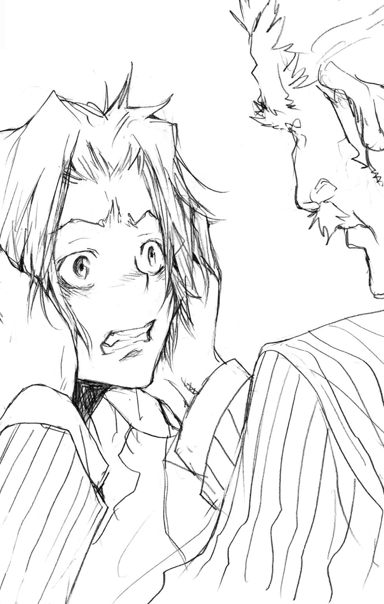
６
はげしくタイヤがこすれる音とともに、高級車が止まった。
すかさず車から飛び出した隼人は、全速力でコンサートホールのある建物の中へとかけこんでいった。
開演の時間まで、あと十分。ほとんどの客は、すでに会場の中に入っているようで、通路に人影は少なかった。
演奏開始の予定時刻から、五分後にダイナマイトは爆発するようになっている。それまでに止めなければ、演奏会はぶち壊しになる。
貧しいなかで苦労を続けていたカルロが、やっとつかんだチャンス――それが、すべて失われることになる。
「遅かったな、スモーキン・ボム」
と、そこに思いがけない邪魔が入った。
「グリッジョ......」
後ろに部下たちをしたがえたグリッジョは、ゆかいそうにネズミそっくりの笑みをうかべていた。
「何をしていたんだ？ ちゃんと見ておきたいだろう。せっかく自分がやった大仕事なんだぞ」
「大仕事？ こんなシケた仕事がかよ」
「とんでもない！ キミの爆弾のおかげて、文化人気どりのあいつらの鼻をあかしてやれるんだ。最高じゃないか」
たまらなく腹がたった。
こいつらは、カルロのこともその思いも、何も知りはしない。そんなやつに軽々しくあつかわれることが、隼人にはどうしても許せなかった。
「おいおい、どこに行くんだ？」
背を向けて立ち去ろうとした隼人に、グリッジョが声をかける。
「目の前で爆破の瞬間を見たいという気もちはわかるが、あまり近くにいては......」
「......止めんだよ」
隼人は、がまんできないというように声をはりあげた。
「爆弾を止めるんだよ！ いますぐにな！」
グリッジョが笑顔のまま固まる。
しかし、すぐさま、
「ま、待て！」
グリッジョの部下たちが飛び出し、あわてて隼人をおさえこんだ。
「何を言っている！ ここに来ておじけづいたのか！」
「うっせーっ！ ビビッてんのはてめーらじゃねーか！」
「なにっ!?」
「コンサートぶっつぶして、それが何になるっつーんだよ！ そんなぐれぇでマフィアが一つどうにかなるかボケェッ！」
「く......」
「えらそーなゴタクばっかならべやがったって、結局まともにケンカも売れねぇビビリってことじゃねーか！ そんなやつらといっしょにやってられっかよ！」
口もとをワナワナとふるわせるグリッジョ。その手が、スーツの内ポケットへとさしこまれる。
「そこまでだ、スモーキン・ボム」
隼人の額に拳銃がつきつけられた。
恐怖はなかった。あったのは、とにかく急いで爆発を止めなければという思いだけだった。
「放せ、てめぇら！ てめぇらの相手なら、あとでいくらでも......っ！」
無防備な腹に、ブーツのつま先がたたきこまれた。さすがの隼人も、苦しそうに顔をゆがめる。
「キミも同じか。古いマフィアたちとな」
それはこっちのセリフだと隼人は思った。グリッジョの目は、他のマフィアが隼人にむけていた虫けらを見るような目と変わらなかった。
「あまりさわがれて人に集まってこられてもこまる。おまえたち、そのガキを外につれて......」
ポスッ！ ポスッ！
どこか間のぬけた音が聞こえた。
その瞬間、彼をつかんでいた黒服の男たちから力がぬけた。
「っ!?」
何がおきたのか、考えているヒマはなかった。
隼人はすかさず男たちをふりはらうと、ホールの入り口にむかって走り出した。
「ま、待て、スモーキン......」
グリッジョは、それ以上声を出すことができなかった。
後頭部に、消音機つきの銃口がつきつけられたのを感じて。
隼人が入ると同時に、ホールの明かりがスッと暗くなった。
まずい――もうすぐコンサートが始まってしまう。
いますぐまわりの者たちにむかって「ここには爆弾がしかけられている」と大声でさけべば、最悪の事態はさけられるかもしれない。しかし、確実にカルロの演奏会は中止になる。そして、その未来も完全に閉ざされてしまう。
隼人は、まわりの注意を引かないように足音を忍ばせつつ、関係者用の通路へと入った。人がいないことを確認しつつ床のカーペットをめくり、工事関係者用の扉をあけて、電気配線などが通されている床下へともぐりこむ。
小型のライトを点灯させ、隼人ははうようにしてせまい空間を進んだ。汗があとからあとから吹き出して、ほこりなどの汚れがべっとりとはりついてくる。しかし、それをぬぐっている余裕はなかった。すでにいつ爆発がおこってもおかしくないのだ。この状況で爆発すれば、隼人の命も危険にさらされる。
それでも隼人は、逃げるわけにはいかなかった。
「っ......！」
ライトの先に、コードでつながれたダイナマイトのたばが照らし出された。
ここのすぐ上が、コンサートホールの舞台へとつながっている。まだピアノの音は聞こえてこないが、それは時間の問題だろう。
隼人は、すばやく自分のしかけたダイナマイトのそばへ近づいた。
「！！！」
そのときだった。
壁をふるわせるほどの大きな拍手がなりひびいてきた。
まちがいない。カルロがステージにあらわれるのだ。
この状況でダイナマイトが爆発すれば、それはカルロをもまきこんでしまう。
（ざけんな......ンなことさせるかよ......）
隼人はダイナマイトにつながったコードへと手をのばした。しかし、まるで極寒の中にいるかのようにその手がガクガクとふるえ出す。
（何でだよ......しっかりしろよ、おい！）
あせりや恐怖、その他さまざまな感情がいっせいに押しよせ、めまいがしてくるほどに隼人は追いつめられていた。
ふるえる手でしかけを解除しようとするのは危険が大きすぎる。
それでも、やらなければ確実に爆発してしまう。
（やるんだ......やるしか......オ、オレがやるしか......）
「聞いているかい、少年」
彼の手が止まる。
遠くから聞こえた――カルロの声。
それは、マイクを通し、会場全体にむかって語りかけられたものだった。
「ニコロに聞いたよ。この街に来ているんだってね。急にいなくなって心配していたんだけど、元気みたいで本当によかったよ。それから......えーと......」
とまどったように言葉が止まり、それは苦笑へと変わる。
「ハハ......他にもいろいろ言いたいことがあったんだけど、なんだかうまく言えないな。ボクはやっぱりピアノを弾くしかできないみたいだ」
客たちの、あたたかな笑い声がひびく。
「ボクを、このステージに立たせてくれたすべての人たちに感謝します。本当にありがとう」
ふたたび、大きな拍手が会場を満たした。
そして――
「........................」
隼人の手のふるえは止まっていた。
あのときと......隼人があの店で初めてピアノを弾いたときと同じ。
弱くてどうしようもない隼人の背中を押してくれたのは――
「..................」
プツン。
小さな音をたてて、つながれていたコードがはずされた。
ダイナマイトは――沈黙したままだった。
「............」
隼人は、顔をあげた。
暗い床下にとどいてくるピアノの音。
初めて聞いたときと同じ......やさしく......あたたかく......――
隼人の記憶を強くゆさぶる――
それは人の親が......大切な者へと伝える愛の形――
「おふくろ......」
隼人は、感じていた。
ここにいるはずのない――その女性の息づかいを。
やっと、わかった気がした。
まだ物心もつかないころに母が聴かせてくれたピアノの音。
カルロが弾くピアノは、それと同じだった。
愛する者への想いがこめられた演奏だった。
「........................」
隼人はひざに顔をうずめ、その場にじっとうずくまった。
ただ、音だけを感じていたかった。
自分を包みこんでくる――ゆりかごのようなやさしい音色を。
「そうか......」
老人は残念そうに、ため息を落とした。
「どうしても......カルロ君たちには会っていかないんだね？」
老人の問いかけに、隼人は迷いなくうなずいた。
ダイナマイトの解除は無事に終わった。そして隼人は、カルロの演奏が終わる前に建物の外に出ていた。
最後まで聴かなくても、演奏会が成功に終わることは確信していた。
「じゃあな、ジイさん」
それだけを言って、隼人は老人に背をむけた。
去っていく隼人の背中を、老人はしばらくの間まぶしそうに見つめていた。
「......どう思う？ 彼のことを」
老人の後ろにひかえていた黒服の男は、すこし難しそうな顔になって、
「正直、このまま行かせてしまうのはどうかと思います。彼がフォルマッジョファミリーの手先となって、ボンゴレの威信を傷つけようとしたのは事実ですから」
グリッジョを始めとしたフォルマッジョファミリーの男たちは、すでに全員その報いを受けていた。
「ボンゴレが関わっているということは極秘にしていたはずなのに、どこで情報がもれたものか。念のため、あの少年もまた何かしでかす前に......」
「フゥ......そういうことではないよ」
老人は、軽く首をふる。
「私は、あの子ならいいと思っているんだ」
「......は？」
「日本に住んでいる......家光の息子の友だちにね」
何気なく言われたその言葉に、男はおどろいた顔で固まった。
「で、ですが......その御方は、将来ボンゴレを背負って立つ......」
「どうだろうね？」
にっこりとおだやかに微笑んで、老人は男を見つめた。
男のほうはというと、
「............」
しばらく何も言えず口をあけ閉めしていたが、やがて口もとをキリッと引きしめ、うやうやしく頭を下げた。
「わたくしごときの浅い考えでは、何も言えることはありません......」
そして、信頼と敬意に満ちた目が、小柄な老人にむけてそそがれる。
「すべては、ボンゴレ９代目のお考えのままに」
＊
一か月後――
隼人は、長い歴史と伝統をほこる巨大マフィア・ボンゴレファミリーにスカウトされることになる。
そして、イタリアの裏社会で名をはせる殺し屋リボーンの要請で、はるか遠く離れた異国の地・日本へと渡るのである。
少年――獄寺隼人の運命の歯車は新たな未来へと、まわり出す。
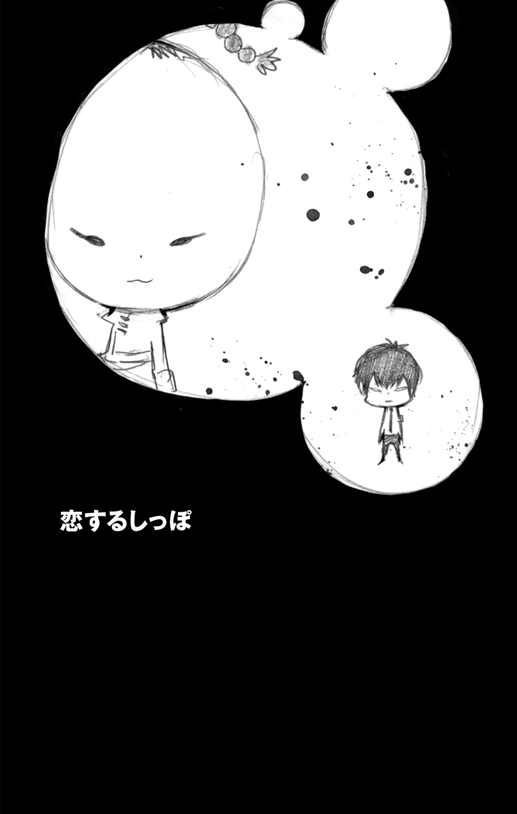
お師匠さま。
おひさしぶりです、イーピンです。
こうしておてがみをかくのも、何度目になるでしょう。
香港にいたころは、とおくはなれたニッポンで修行することになるなんて、思っていませんでした。
きっかけは、サワダさんを殺すあいてとカンちがいしてしまったことですが、リボーンに、わたしの餃子拳をやぶられたことも、おおきな理由のひとつです。
そのときわたしは、くやしいという気もちとおなじくらい、すごいと思いました。
リボーンはつよいだけでなく、とても大人です。
くろくてニガいコーヒーをのんだり、ハンカチをわすれずにもっていったり、おひるねの時間をちゃんとまもったりと、いつでも大人です。
そんなすごいリボーンをみならって、わたしもがんばりたいです。
でも、ときどき、さびしくなることがあります。
それは、お師匠さまが、そばにいないからです。
ニッポンで修行することを、お師匠さまはこころよくゆるしてくださいました。
なのに、こんなことを思ってしまうなんて、ミジュクな自分がはずかしいです。
だから、はじめてあの人をみたときも、お師匠さまがなつかしくて、マボロシをみてしまったのだと思いました。
でも、ちがいました。
その、おどろくほどにお師匠さまとそっくりな人は、ほんとうにいたのです。
その人とは、入院したサワダさんのところへ、おみまいにいったときにであいました。
名前を、ヒバリさんといいます。
◆
並盛中学校・校庭。
そこは、処刑場と化していた。
刑はすみやかに執行された――たった一人の黒髪の少年の手によって。
「く......くぅ......っ」
校庭に倒れている学ラン姿のゴツい男たち。
数十人にもおよぶその男たちの中で、口に葉っぱをくわえたとりわけ大柄な一人が、瀕死の状態ながらかろうじて顔をあげた。
と、
「草壁」
そのあごが、くい、ともちあげられる。
刑の執行に使われた得物――血潮にぬれたトンファーによって。
「委員長......」
草壁とよばれた男の前にしゃがんでいたのは、まわりに倒れている者たちとは比べものにならないほど細身で華奢な少年だった。
「も......申しわけありません......」
草壁の声が、かすかにふるえる。
少年の口もとが、うすく笑みを刻む。
そして、草壁にむかっておだやかな声で話しはじめた。
「報告してよ。僕の留守中に何か変わったことはあった？」
「いえ......大きな事件は何も......。ただ......」
「ただ？」
問い返す少年の声に、うれしそうな色がくわわる。
草壁は確信する。これから自分が名前をあげる人物のもとへ、目の前の少年が直行するだろうということを。
風紀委員長として――
愛する学校を乱す存在を――咬み殺すために。
「なんで、だまってるの？ 早く何があったか言いなよ」
「はい......」
草壁は、その人物の名を口にした。
「例の......沢田綱吉と赤ん坊がたびたび校内でさわぎをおこしておりまして......」
少年の顔から笑みが消えた。
「ふーん......」
つまらなそうな吐息とともに立ちあがり、倒れている草壁に背をむける。
「......委員長？」
「前にも言ったよね」
ちらりと後ろをふりかえり、冷たい目で草壁を見下ろす。
「あの草食動物と赤ん坊には、しばらく手をつけない。それに......」
ふたたび、少年の口もとにうすい笑みがうかぶ。
「もう病院で遊ばせてもらったからね」
「は......？」
それ以上は何も言わず、少年はその場から歩きはじめた。
しかし、すぐに何か思い出したという顔になって、草壁のところへもどる。
そして、
「きっちり死んどいてよ」
横殴りの強烈な打撃。
草壁は、一瞬で意識をもっていかれ、地面につっぷした。
校庭に倒れている多くの男たち――彼らには自分たちの失敗を後悔するヒマさえ与えられなかった。
風邪をこじらせて入院していた少年の復帰を祝おうと、風紀委員全員で出むかえたことが、彼らの最大にして唯一の失敗だった。
その少年は、弱者が群れることを何よりも嫌う。
最強の名をほしいままにする彼にとって、自分以外のすべては弱者だった。
風紀委員長にして、最凶最悪の不良――
雲雀恭弥は、こうして愛する並盛中学校に帰ってきた。
お師匠さま、イーピンです。
このあいだ、おてがみでかいたヒバリさんのことを、おぼえていますか。
あれから、おどろくべきことがわかりました。
なんと、ヒバリさんは、サワダさんとおなじ学校にいるそうなのです。
そのことを知って、わたしはドキドキしてしまいました。
ヒバリさんにあいたい。
お師匠さまにあえないかわりに、お師匠さまとそっくりなヒバリさんにあいたいと、つよく思いました。
でも、がまんです。
わたしがニッポンで修行をはじめたのは、お師匠さまのそばであまえたままではつよくなれないとも思ったからです。
ここでヒバリさんにあいに行ってしまったら、なんだかダメな気がします。
それに、かってにお師匠さまのかわりにしてしまっては、ヒバリさんに対しても、いけないことだとかんじます。
あらためて、お師匠さまとやくそくします。
わたしは、リボーンにまけない殺し屋になるまで、ニッポンでがんばります。
いつかりっぱになって、お師匠さまのところにかえりたいです。
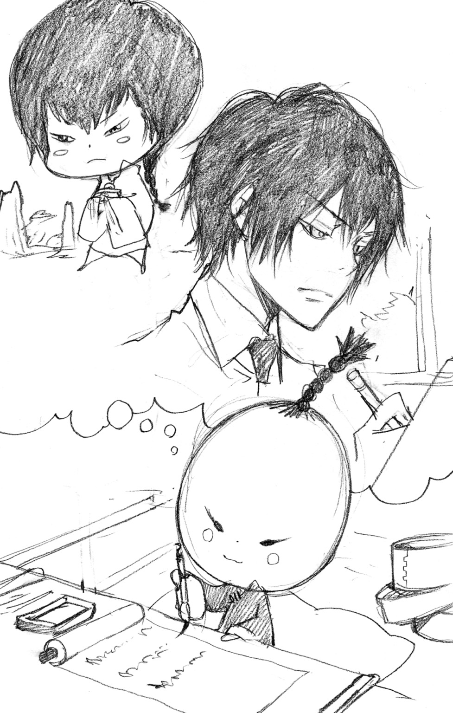
◆
並盛中・応接室。
風紀委員......というより、雲雀が個人的に使用しているこの部屋を、緊張した顔の風紀副委員長・草壁がおとずれていた。
「で、何かわかった？」
「はい......」
いま並盛中では、ある事件がおこっていた。
謎の連続爆発事件――
校内のいたるところで、場所や時間を問わず原因不明の爆発が連続しておこっており、風紀委員はその犯人探しに追われていたのだ。
「爆発物のくわしい正体は不明です。強い異臭以外、残っているものがほとんどないためで......」
「ふぅん......」
「爆発物をしかけた犯人についても、いまのところ手がかりはつかめていません。その手段や動機についても不明です」
「不明ばかりだね」
草壁の身体にかすかなふるえが走る。自分よりはるかに小柄な相手を前にして、彼はおおげさすぎるほどに緊張していた。
それでも声をふるわせないのは、風紀副委員長として常に堂々としていなければという信念のため。そして、恐怖以上に大きな尊敬の気持ちをむけている雲雀の前で、無様な姿をさらしたくないという思いのあらわれだった。
「......報告は、それだけ？」
「いえ。あと、もう一つだけ」
「何？」
「実は......これは確実とは言い切れないのですが......」
草壁は、かすかな迷いをふりはらい、雲雀の目をまっすぐにのぞきこんだ。
「爆発がおこった場所に、共通点と思われるものがあります」
お師匠さま、ごめんなさい。
がまんするとちかったばかりなのに、ヒバリさんとあってしまいました。
いいわけになってしまいますが、はじめはそんなつもりなんてありませんでした。
ママンさんにたのまれて、サワダさんのわすれものをとどけるため、学校へいっただけなのです。
でもそこで、ぐうぜん、ヒバリさんをみつけてしまいました。
あの人は、ひとりで外にたっていました。
わたしは目がはなせなくなってしまいました。
まるで、天使みたいに、かがやいてみえました。
むねがあつくなって、息がくるしくなって、そこからはなにもおぼえていません。
それから、わたしは、なんども学校へいくようになりました。
とおくから、みているだけでもいい。そう思いました。
ヒバリさんは、ほんとうにすてきな人です。
フウキイインというおしごとをしていて、学校のわるいことをゆるさない人です。
そんなヒバリさんを、学校のみなさんもそんけいしていて、生徒さんだけでなく、先生がたも、いつもきちんとあいさつをされています。
たくさんの人から好かれているところも、お師匠さまとそっくりです。
ごめんなさい。
おわびのおてがみなのに、またヒバリさんのことばかりかいてしまいました。
もう、ヒバリさんには、あいません。
◆
雲雀は、上機嫌だった。
かすかに鼻歌らしきものまで聞こえた気がした。雲雀の愛する並盛中の校歌が。
「..................」
普通の人間なら考えられない。彼のすぐ後ろを歩きながら、草壁はそう思っていた。
学校でおこっている謎の爆発事件を調査した結果、草壁たち風紀委員は一つの結論にたどりついた。
雲雀がねらわれている――
爆発は、すべて雲雀の近くでおこっていた。
雲雀が応接室にいるときは、そのすぐ前の廊下。屋上にいるときは、階下へ通じる扉の内側。校舎裏にいるときは、近くにある焼却炉の中......といったように。
暴力がメインの『風紀活動』のため、雲雀を恨んでいる者は少なくない。
ねらわれている可能性があることを報告し、護衛として自分たちをそばにおいてほしいと頼んだ草壁だったが、返ってきたのは容赦のないトンファーの一撃だった。
そして彼は、命をねらわれている人間とは思えないほどうれしそうな笑顔で、こう言ってのけた。
「草食動物と赤ん坊のほかにも、おもしろそうなやつが来た」
お師匠さま、イーピンです。
すてきな殺し屋になるため、きょうもがんばって修行しています。
きのう、お師匠さまと修行していたころの夢をみました。
人みしりで、はずかしがりやのわたしに、それはイーピンのいいところなんだよ、といってくれたことは、いまでもわすれられません。
お師匠さまがいてくれたから、餃子拳だけでなく、筒子時限超爆という大技もつかえるようになったのだと思います。
でも、筒子時限超爆のほうは、まだうまくコントロールができなくて、はずかしくなると、いつのまにかバクハツしてしまいます。
これからもっと修行して、いつかかならずうまくつかえるようにしたいです。
このあいだ、ビアンキさんにお料理をおしえてもらいました。
ビアンキさんは、どくサソリとよばれるイタリアの有名な殺し屋で、リボーンのあいじんでもあります。
ビアンキさんは、お料理にいちばんたいせつなものは、愛だといいました。
ビアンキさんの中にあるリボーンへの愛が、お料理をおいしくするのだといいました。
愛、という気もちが、わたしにはまだよくわかりません。
わたしがそういうと、だれかに自分のつくったものをたべてもらいたいという気もちが愛なのだと、ビアンキさんはおしえてくれました。
だから、わたしもそういう思いをこめて、お料理をつくりました。
そして、ビアンキさんもほめてくれるくらい、とてもじょうずにできました。
お師匠さまにみせたいなあと、思いました。
◆
応接室から、次々と担架で運び出されていく風紀委員の部下たちを見て、草壁はガスマスクの内側で汗をうかべた。
「まさか、このような手に出てくるとは......」
彼らは、雲雀の留守中に掃除をするため、この応接室をおとずれていた。
そして、運悪く今回の事件に出くわしてしまったのだ。
「爆発物だけでなく、毒物も使いこなせるとは......」
にぎりしめた草壁の拳が汗ばむ。
倒れた部下たちの中でかろうじて意識のあった者に聞いたところ、応接室に入ったとたんにはげしい異臭を感じ、手足がしびれて動けなくなったのだという。
草壁が警戒していたからよかったものの、発見が遅れていれば最悪の事態もありえた。
「おのれ......」
草壁は、ガスマスクごしに、応接間のテーブルをにらみつけた。
そこにのっていたのは、まるで料理のように皿にもりつけられた毒々しい色の一品。風紀委員の猛者たちを気絶させた毒煙の発生源である。
もはや疑いようもない。謎の殺し屋のターゲットは、雲雀なのだ。
そして、敵は手段をえらばずに攻撃をしかけてきた。
雲雀は草壁たちに手を出すなと言っているが、ここまでされてただ黙っているわけにはいかない。
「必ず見つけだしてみせるぞ。風紀委員の総力をあげてな」
決意を胸に、草壁はその場をあとにした。
お師匠さまに、こくはくします。
わたしは、またヒバリさんのいる学校へ、いってしまいました。
でも、しんじてください。ヒバリさんとはあっていません。
かくれて、みていたりもしていません。
わたしはただ、お料理をとどけにいっただけなのです。
このまえ、おてがみでかいたように、わたしはビアンキさんとお料理をつくりました。
せっかくつくったものをむだにしたくなくて、それで、ヒバリさんのところへもっていったのです。
サワダさんやリボーンに、たべてもらおうかとも、思いました。
でも、わたしは、わたしのたいせつな人にたべてもらいたいと思って、お料理をつくりました。
その中には、ヒバリさんへの思いもはいっていました。
ビアンキさんは、この思いが、愛なのだといっていました。
わたしの、ヒバリさんへの気もちは、愛なのでしょうか。
◆
「委員長！」
応接室にかけこんできた草壁を見て、雲雀は読んでいた本から顔をあげた。
「例の犯人について、有力な情報が入りました！」
「へぇ......」
雲雀の口もとに、しずかな笑みがうかぶ。
「裏社会の情報屋によると、連続しておこっていた爆発は『筒子時限超爆』という幻の暗殺技と非常に似通っているそうです」
「幻の......」
「さらに、先日しかけられていた毒物は『ポイズンクッキング』とよばれるものらしいのですが、これも使い手は限られていて、それらの線から敵の正体がつかめそうです」
「........................」
雲雀の目が、しだいに熱をおびはじめる。
彼にとって、どのような殺し屋も咬み殺すだけの相手でしかない。
しかし、咬み殺しがいがあればあるほど、それは雲雀にとって好ましいことだった。
「......で？」
不意の雲雀の問いかけに、草壁は意味がわからず目をまるくする。
雲雀はじれったそうに、言葉を重ねる。
「いつ咬み殺せるの、その殺し屋を」
「っ......」
草壁の背すじにふるえが走る。
彼は、雲雀の戦いへの渇望が、周囲にとって『危険』といえるレベルにまで高まっているのを感じた。
このままでは、しびれを切らした雲雀が、殺し屋以上の脅威となる可能性もある。
「実は......」
草壁は、話すべきかどうか迷っていたその情報を口にしはじめた。
「これはまだ......未確認の情報なのですが......」
お師匠さま、たいへんなことを、きいてしまいました。
いま、サワダさんの学校を、殺し屋がねらっているそうなのです。
しかも、その殺しのターゲットは、あのヒバリさんなのです。
どうして、ヒバリさんのような、すばらしい人がねらわれるのでしょう。
ヒバリさんは、学校や町のみなさんにとって、たいせつな人です。
わたしは、ぜったいにその殺し屋をゆるせません。
サワダさんがいうには、いま学校では、フウキイインのかたたちが、いっしょうけんめい殺し屋をさがしているそうです。
わたしも、それをおてつだいしたいと思っています。
ヒバリさんには、ぜったいに、あいません。
だから、せめてヒバリさんのために、はたらかせてください。
どうか、わたしのおねがいを、ゆるしてください。
◆
草壁は、血にぬれた唇をかみしめた。
くわえていた葉っぱが、消し炭となってくずれ落ちる。
「ま......まさかな......」
油断だった。完全に油断をしていた。
雲雀の望みに応えるべく、殺し屋をさがそうとあせっていたのは事実だ。
しかし、自分たちが、こうも簡単に返り討ちにあってしまうとは――
「く......」
人気のない裏路地のあちこちが、無残に破壊された姿をさらしている。
それは、並盛中で何度もおこった謎の爆発と、まったく同じものだった。
爆心地に倒れているのは、草壁を始めとした風紀委員の猛者たち。彼らの学ランはボロボロに焼けこげており、そこでおこった爆発のはげしさと、彼らの負ったダメージの大きさを物語っていた。
「このまま......むざむざと............」
草壁は、重い身体をひきずり、地面をはうようにして進みはじめた。
「やらせん......委員長を............恭さんを......っ......」
立場を重んじて日ごろ決して口にしない呼び方をつぶやきつつ――
草壁は力つき、意識を失った。
お師匠さま。
これが、さいごのおてがみに、なるかもしれません。
ヒバリさんのなかまの人たちが、なぞの殺し屋にたおされました。
それも、わたしの目の前で。
殺し屋をさがしていたなかまの人たちに、わたしもおてつだいさせてほしいと、たのんだところまではおぼえています。
でも、ヒバリさんのためだというのが、とてもはずかしくて、またわたしは気をうしなってしまいました。
そして、気がついたとき、なかまの人たちは、みんなたおされていました。
わたしは、あわてて殺し屋をみつけようと、あちこちさがしまわりました。
でも、どこにも、それらしい人はいませんでした。
なぞの殺し屋は、とてもつよいみたいです。
もう、ヒバリさんを、ほうってはおけません。
わたしは、お師匠さまとのやくそくを、やぶります。
破門にされることも、かくごしています。
わたしは、ヒバリさんのところへいきます。
◆
ブウンッ！
仕込みトンファーが、応接室の空気を切り裂く。
雲雀は、ひとり無言のまま、部屋の中でトンファーをふるいつづけていた。
敵を確実にしとめる以外、むだが一切ないその動きは、神にささげる舞踏のような清らかさすらただよわせていた。
「........................」
雲雀の動きが止まる。
その顔には、汗一つうかんでいなかった。
「......さて......」
ウォーミングアップは終わった。
あとはただ――
「いま行くよ。キミを......咬み殺しに」
風紀委員の証である学ランをはおり、殺し屋との決着をつけるべく雲雀はさっそうと歩き出した。
と、
「委員長！」
部屋に、学ランの男がかけこんできた。草壁を始めとした実力者が全員入院しているため、それは雲雀がろくに顔も知らないような下っぱの風紀委員だった。
男は、草壁なら決して見せないうろたえた様子で、口をひらいた。
「こ、ここ、こちらにむかってきています......」
「......何が？」
「例の......殺し屋が！」
次の瞬間、あふれかえった感情は、雲雀を一匹の獣と化した。
ガッッ！！！
思いもかけないトンファーの一撃をうけ、声もなく応接室の床に倒れる男。
気もちのたかぶった雲雀の側にいたことが、彼の不幸だった。
「......フフ」
トンファーについたばかりの赤い血をなめ、雲雀は笑みをこぼした。
その目はじっと扉を見つめ、自分の咬み殺すべき獲物を待ちかまえる。
「さぁ......来なよ......」
そして――
ちいさな足音が、部屋の前で止まった。
「――！」
確殺のトンファーが、ちいさな頭を目がけて振りおろされた。
お師匠さま、
ごめんなさい。
◆
疾った。
床を蹴り、銃弾のようにはげしい攻撃をくり出す。
フッ――
かわされた。
しかし、雲雀はその動きを読んでいた。
流れるように身体をひねり、ターゲットが逃げた空中へとトンファーをふるう。
動きのとれない空中では、決してよけられない攻撃。
雲雀は、笑っていた。
笑いながら、そのちいさなターゲットをめがけて――
鋼のトンファーをたたきこんだ。
「――死になよ」
ガァァァァァンッ！！！
激しい破裂音が、応接室にひびきわたった。
そして――
「..................っ」
床に落ちたのは、雲雀が手にしていたトンファーだった。
「..................」
硝煙のにおいをかぎながら――
雲雀は、床に降り立ったちいさな人影に視線をむけた。
自慢の武器を、正確無比な銃撃によって撃ち落としたその人物に。
「すばらしいね。キミと遊ぶのは本当に楽しいよ――」
「――赤ん坊」
お師匠さま、イーピンです。
おかしなおてがみをかいてしまって、すみませんでした。
あのときは、あたまの中がいっぱいになってしまって、あれしかかけませんでした。
お師匠さま。
わたしは、ヒバリさんのところに、いきませんでした。
――――がとめてくれたのです。
お師匠さまとのやくそくを、かんたんにやぶってしまうのはよくないと。
わたしは、ないてしまいました。
ヒバリさんは、たいせつです。
でも、おなじくらい、お師匠さまのこともだいすきです。
わたし、やっぱり、お師匠さまの弟子を、やめたくありません。
ごめんなさい。
もういちど、わたしを、お師匠さまの弟子にしてください。
◆
「なぁ、ヒバリ」
「........................」
「あんま怖ぇー顔してんじゃねぇぞ、ヒバリ」
「........................」
「ごきげんななめってとこか？」
「......別に」
雲雀は椅子から立ちあがり、むかいにすわっている人物に背をむけた。
「じゃあ、キミはこう言うんだね。これまで校内でおこった爆発や、毒物の事件はすべてキミのしわざだと」
「ああ、そうだぞ」
「理由は......僕たちがマフィアとしてふさわしいかどうか、その危機管理能力をためしたかったと」
「ああ、そうだ」
「........................」
次の瞬間――
ビュオォゥッ！！！
雲雀の全身に殺気がふくれあがり、ふりかえると同時にトンファーを振りおろした。
キィンッ！
岩すら砕く一撃は、ちいさな手ににぎられたオートマチック拳銃によってうけとめられた。
雲雀の腕に力がこもる。
しかし、拳銃がゆらぐ気配はなかった。
「キミは僕の学校を傷つけた」
「壊したくて壊したわけじゃねーぞ。カン違いすんな」
「それで、僕が納得すると？」
「納得しろ」
「無理な話だね」
「これで話をおさめてくれたら......」
「くれたら？」
「また、いつでもオレが遊んでやるぞ」
ピタリ。
雲雀の動きが止まった。
「.......................................」
そして――
雲雀は、静かにトンファーを引いた。
「納得してくれたみてぇだな」
「......いいや」
「まだ、何かあんのか」
雲雀は、口もとに手をあて、すこし考えるそぶりを見せたあと、
「......草食動物もつけてくれるかい？」
「ぜんぜん、かまわねーぞ」
二人の間に、停戦が成立した。
「じゃあな、ヒバリ」
小さな人影が、ぴょんと椅子から立ちあがり、扉へと歩いていく。
「ちょっと待ってよ」
よびかけに、ちいさな足が止まった。
「......なんだ、ヒバリ？」
「最後に一つ、聞いていいかい」
ほんのわずか、ちいさな身体に緊張が走る。
そんな彼にむかって、雲雀はやわらかな口調で話しはじめる。
「いくつか、気になることがあるんだ」
「気になること？」
「部下から、今度のことでいろいろと報告を受けていたんだよ......」
ひざをついた雲雀は、彼の肩にそっと手をおく。
「例の爆発に使われたのは、使い手の限られた特別な技らしい」
「オレが使えると、おかしいか？」
「しばらく前から、並盛町に香港の殺し屋が来ているらしい」
「オレとは、関係ねーぞ」
「それでね......これが一番気になることなんだけど」
肩をつかむ雲雀の手に、力がこもる。
「草壁たちを襲ったのは、弁髪に中華服の子どもだったっていうんだ」
応接室を、沈黙が支配する。
何もこたえない相手に代わって、雲雀は言葉を続ける。
「他の部下たちは、まだ意識不明なんだけど、草壁からは話を聞けてね。それで、犯人の正体がわかったんだ。裏の情報屋からも、確認がとれたよ。殺し屋の名前は『人間爆弾』の......」
ス――
小さな手がかかげられた。
それ以上は、もういいと言うように。
「......で。おまえは、どうするつもりだ」
「もちろん咬み殺すよ。草食動物の家にいることも知っている。キミが来なければ、まっすぐむかうつもりだったんだけど......」
その瞬間だった。
音もなく、雲雀の眉間に銃口がむけられた。
「何度も言わせるな。おまえの部下たちをやったのは、オレだ」
「........................」
銃口をつきつけられて――
雲雀の顔には、これまで以上の笑みがうかんでいた。
ちいさな身体から伝わってくる確かな殺気。
返答次第では、銃はまちがいなく自分にむけて火を噴く。
その感覚が、雲雀には、たまらなく楽しかった。
「......わかった」
雲雀は、つかんでいた肩から手を放した。
彼は、惜しいと思った。
この楽しい遊びを、簡単に終わらせてしまうことが。
もっと長く楽しむために、目の前の人物に貸しをつくっておくのは悪くない。
そう、判断したのだ。
「..................」
無言のまま、拳銃がしまわれる。
そして、ちいさく手をふって、彼は雲雀に背をむけ歩きはじめた。
「教えてくれないか......」
雲雀が、去り行く彼に声をかける。
「どうして、そこまでして、キミはあの殺し屋をかばうんだい？」
ふたたび、彼の足が止まる。
そして彼は、くいっと帽子のつばを下げつつ、こう言った。
「女にはやさしくするもんだ......マフィアってのはな」
お師匠さま、イーピンです。
おてがみ、はいけんしました。
わたしは、お師匠さまのイーピンでいられて、しあわせです。
ヒバリさんをねらっていた殺し屋ですが、ヒバリさんがみごとに、かえりうちになさったそうです。
ヒバリさんは、ほんとうにすごいです。
お師匠さま、わたしはきっと、いちにんまえの殺し屋になります。
いちにんまえになってから、お師匠さまと、そしてヒバリさんに、むねをはって、あいにいきたいです。
その夢のために、きっと、わたしはつよくなります。
きょうも、がんばって修行です。
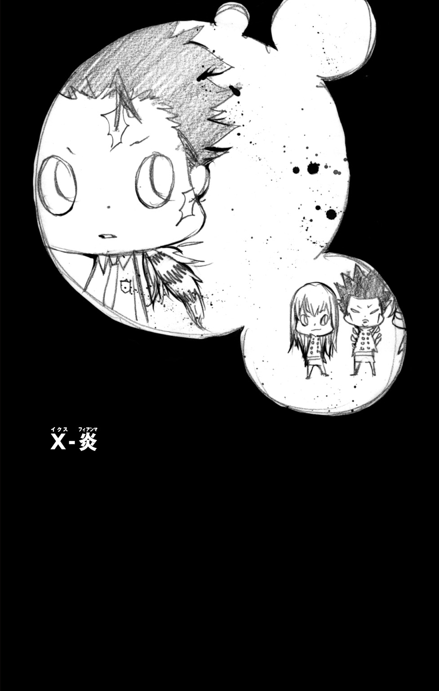
ボンゴレリング争奪戦。
関係者の間でそうよばれる一連の事件に、とりあえずの終止符が打たれてから、数日が経過した。
ＸＡＮＸＵＳ――
ボンゴレファミリー９代目ボスの嫡子にして、独立暗殺部隊ヴァリアーの長。
沢田綱吉――
日本へ渡った初代ボンゴレボスの血を引くボンゴレ門外顧問・沢田家光の一子。
次期ボスの座をめぐって行われた二人の候補者の争いは、大方の予測をくつがえし、いまだ幼さの残る少年・沢田綱吉の勝利に終わった。
しかし、その結果以上に周囲の思惑をこえていたことがある。
それは、争奪戦に関わった者たちだけでなく、ボンゴレファミリーそのものが大きすぎる傷を負ってしまった事実だ。
特に、穏健な人柄でしたわれていた９代目ボスがその生命の危機に瀕したことは、幹部を始めとした多くの者たちに衝撃をあたえることとなった。
最初から、今回の争奪戦には、多くの謎が存在した。
八年前の『揺りかご』とよばれる反乱事件で処罰されたはずのＸＡＮＸＵＳが、なぜヴァリアーのボスとしてふたたび表舞台に立つことができたのか――
そもそも、なぜ９代目の嫡子である彼が、反乱計画を実行することになったのか――
そして、八年もの長い時間、彼はどこでどのように過ごしていたのか――
チェルベッロ機関と名乗る者たちのように、ＸＡＮＸＵＳの協力者と思しき人間たちもふくめれば、今回の事件にまつわる闇の深さは計り知れない。
現在、いくつかの謎については、その真相はあきらかにされている。残されたものについても、鋭意調査は進められている。
我々には、一刻も早い全容の解明が求められている。
これから記すのは、その謎を解く手がかりの一つとなる事件の記録である。
ボンゴレリング争奪戦の始まる約一か月前。
我々の同志が、別件を追っている途中で遭遇した事件――
人工島マレ・ディアボラ襲撃占領事件である。
９月16日 PM11：55
眼鏡のむこうにある瞳が、大きくゆれた。
「そん......な......」
オッタビオは、巨大マフィア・ボンゴレファミリーにおいて、出世いちじるしい若手の幹部だった。
ふちなし眼鏡の似あうインテリ然とした顔つきそのままに、表立って荒事には参加しないタイプ。しかし、さまざまな方面への交渉能力の高さと、どのような仕事も冷静にこなす点が評価され、まだ三十代でありながら組織内部で大きな地位を築きつつあった。
そんな彼が、これほどはっきり感情をみだすのは、きわめてめずらしいことだった。
つまり――
夜の闇からにじみ出るようにしてあらわれたその人物は、彼にとってそれだけ重要な相手ということだった。
「........................」
オッタビオの前に立ったその男は、だまって彼を見つめていた。
背の高い青年だった。オッタビオも決して低いほうではないが、彼を見おろすようにして立つその男は、イタリア人男性の平均から見てもかなりの長身といえた。
一見して、ただものではないことがわかる。
そういう気配を、身にまとった男だった。
ゆるく着くずした服装からは、だらしなさでなく、何ものにも縛られないという強く静かな意志を感じさせ、それは絶対的な威圧感となってその場を支配していた。
「............あぁ」
オッタビオが、ちいさな吐息とともにひざをついた。
そうするのが当然という空気が、彼らの間にはあった。
「お久しぶりです、10代目」
まわりにいたオッタビオの部下たちは驚愕した。
ボンゴレファミリーの頂点に立つ９代目ボスは、高齢とはいえ、いまも健在である。
オッタビオは、青年のことを『10代目』といった。
つまり、突然あらわれたこの男が、ボンゴレの次期ボスなのだと。
「......オッタビオ」
青年が口をひらいた。
他人に命令することに慣れ切った口調だった。
ぐっと腰をかがめると、彼はオッタビオの前髪をわしづかみにして自分とむきあわせた。
「言え。いまの状況を」
「......はい」
そのように屈辱的なことをされながら、オッタビオはすこしも怒る様子を見せず、当然というように青年の傲慢さをうけいれていた。
「現在、我々は非常に困難な状況に直面しています。このままでは我々だけでなく大ボンゴレ、いえ、同盟ファミリーにも......」
「おい」前髪をにぎる手に力がこもる。「戯言言ってんじゃねぇ、カスが」
「..................」
「返事はどうした？」
「はい......申しわけありません」
痛みで、かすかに顔をふるわせつつも、オッタビオはすなおに目をふせた。
「いまからおよそ三時間前。この海岸より一・一五キロの沖合にあるマレ・ディアボラ島の迎賓館が、謎の武装集団による襲撃を受けました」
マレ・ディアボラ――
かつて、旧イタリア軍が海上防衛のために設けたこの人工島は、時代の流れとともにその役割を終え、民間へと売却譲渡された。
島の所有権を手にしたボンゴレファミリーは、海洋のリゾート地として島を生まれ変わらせようと、豪華な屋敷の建設を始めとしたさまざまな開発を行った。
その管理をまかされていたのが、オッタビオだった。
つまり、マレ・ディアボラでおこったことの責任は、すべて彼が負うことになる。
もちろん――いまおこっている最悪の事態についても。
「マレ・ディアボラでは、同盟ファミリーの有力者を集めた懇親パーティーが行われていました。参加者はおよそ百五十名。そのほぼ全員が、武装集団によって拘束されている模様です」
それは、あってはならない事態といえた。
イタリアの裏社会で勇猛さをもって知られるマフィアの者たちが、逆にとらわれの身になってしまったというのだから。
しかし、話を聞いている青年は、すこしも表情をくずさなかった。
「幸いというべきか......私は、別件で到着が遅れたため、こうして事件に直接まきこまれずにすみました」
そう言いつつ、オッタビオは苦しそうに目をふせる。
「武装集団は我々に条件をつきつけてきました。人質を解放してほしければ、二千万ユーロを現金でさし出すようにと」
つまり、人質を楯にした身代金の要求。
しかし、オッタビオが、それを簡単にのめるはずはなかった。
金額がいくらかは問題ではない。マフィアとは、命をかけてそのプライドを守り続けてきた男たちなのだ。
あっさりと脅迫に屈してしまえば、その権威は地に落ちてしまう。
「夜明けまでに金銭が用意できなければ......人質はすべて......」
「ハッ」
青年が鼻で笑った。
つかんでいた前髪を放し、オッタビオに背をむける。
「てめーらはここでおとなしくしてな」
「え......？」
「島にいる人質の無事はオレが保障してやる。この......」
「正当なるボンゴレの継承者――ＸＡＮＸＵＳがな」
＊
「本当にオレたちだけでいいのか？」
低いつぶやきが、暗闇をふるわせた。
次の瞬間、明かりを消したボートの中に満ちたのは笑い声だった。
苦笑、失笑、冷笑――違いはあるものの、それはすべて相手を見下す悪意をにじませるものだった。
「何がおかしいというのだ、貴様ら！」
怒りの声とともに、人影がいきなり立ちあがり、ボートがかすかにゆれる。
「 ぉい！ でけぇ声出してんじゃねぇぞぉ！」
ぉい！ でけぇ声出してんじゃねぇぞぉ！」
と、こちらも負けない大声をはりあげ、別の人影が立ちあがった。
「オレらが何のために真っ暗闇ン中でジッとしてんのか忘れたかぁ？ こんなとこでバレたら、ＸＡＮＸＵＳの作戦も全部パァだろうがぁ！」
「貴様ごときがボスの名を口にするな、スクアーロ！」
顔もはっきりと見えないなか、にらみあう二人の間に殺気がふくれあがっていく。
「はい、そこまで」
ドスッ！ ドガッ！
「ぐ......」
「うぉ......」
二つの人影が、くずれ落ちるようにひざをついた。
「あーら、二人とも痛かった？ ま、痛くするつもりでやったんだけど」
「ぐ......ルッスーリア......」
「この......オカマヤローがぁ......」
不意をつかれた腹部への打撃に、二人の怒りの矛先は割りこんできた男のほうへとむかって――
「本当にいいかげんにしなよ、二人とも」
ため息まじりの声は、彼らの足もとから聞こえた。
そこにいたのは、まるで赤ん坊のようにちいさな人影だった。
「そんな金にならないようなケンカして、何が楽しいの？」
「うるせぇぞぉ、クソチビぃぃぃっ！」
スクアーロとよばれた男が、一切の手加減なく足もとの影を蹴りあげた。
「！」
奇妙な感覚。
そして目をこらせば、なんと蹴りあげた長い脚の先に、ちいさな人影がちょこんと立っていた。
「いいかい？ 八年ぶりのミッションなんだよ」
静かな声だったが、それは一瞬にしてその場の熱い空気を冷却した。
「ボンゴレ最強の暗殺部隊ヴァリアーが、ひさしぶりに表舞台に出るんだ。ボスに恥をかかせたくはないよね」
「当然だ！」
だれよりも早くそうこたえたのは、ケンカのきっかけとなる台詞を口にした男だった。
ちいさな人影は音もなく床におり、なだめるような口調で彼に語りかける。
「それでレヴィ。キミはいったい何を不安に思ってるんだい？」
「不安など感じてはいない。オレは今回のミッションに、本当に五人だけで大丈夫なのかと、そう言っているのだ」
「足りないってこと？」
「島には多くの人質がいるのだろう。逃がすためには、オレが育てあげたレヴィ雷撃隊も動員して......」
「バーカ。逃がす必要とかねーっつーの」
そう言ったのは、いままで騒ぎに加わっていなかった五つ目の人影だった。
星明かりの下、彼の手にしたナイフがギラリときらめきを放つ。
「ぜーんぶ殺しちゃえばいいじゃん。そーすればみんな解決っしょ」
しししっ、と笑い声がもれる。
レヴィとよばれた男のほうは、「ぬ......」とうなったものの、それ以上は何も反論しなかった。
そして、話をしめくくるように、ちいさな人影が口をひらく。
「これは試験でもあるんだ。ボスの目指す未来――そこにキミたちがついてこられるかどうかのね」
無言のまま、わかっているというようにうなずく四人。
と、そのとき、彼らにいっせいに緊張が走った。
装着していた小型の無線機を通して、ＸＡＮＸＵＳから作戦開始の命令が伝えられたのだ。
「行くぞぉ、おまえらぁ！！！」
スクアーロの声とともに、エンジンの音が夜気をふるわせた。
９月17日 AM00：20
ＸＡＮＸＵＳ――
ボンゴレファミリーにおいてそれは知る人ぞ知るという〝悪名〟だった。
八年前におこった『揺りかご』とよばれるボンゴレ史上最大の反乱事件。
そのリーダーこそが、ＸＡＮＸＵＳだった。
ＸＡＮＸＵＳはボンゴレ９代目ボスの子どもであり、マフィアとしてのすぐれた資質から次期ボスの最有力候補とされていた。
しかし、それも反乱事件をおこすまでの話だ。
「......ＸＡＮＸＵＳ様」
小型の無線で誰かと連絡をとっていたＸＡＮＸＵＳ。その話が終わったタイミングを見計らって、オッタビオは彼に声をかけた。
「先ほどの言葉はどういう......？ まさか、あなたが自ら......」
「うるせぇ」
オッタビオの問いかけを、ＸＡＮＸＵＳは一言で切って捨てた。
しかし、オッタビオはそれを予想していたように、慎重な様子で言葉を重ねた。
「ひょっとして......スクアーロたちを動かしたのですか？」
ＸＡＮＸＵＳは何もこたえなかった。
しかし、オッタビオのほうは、自分の推測が正しいと確信したようだった。
「すでに彼らと会われていたのですね。私には何の連絡もなかったのに」
オッタビオはどこかさびしそうに、軽く目をふせる。
「彼らは、ずっとあなたがお帰りになるのを待っていました。ふたたび、あなたとともに働きたいと技をみがきつづけていました。だから......」
「てめぇか？」
ふいに、オッタビオの言葉をさえぎるように、ＸＡＮＸＵＳが口をひらいた。
「カスザメどもを、上の連中からかばったのはてめぇなのか」
「..................」
とまどうような沈黙のあと、オッタビオはちいさく首をふる。
「かばったなどと......彼らはまだ年若い少年でした。ベルフェゴールにいたっては、天才とはいえまだ八歳。上もそう厳しい処罰をくだすことはありませんでした」
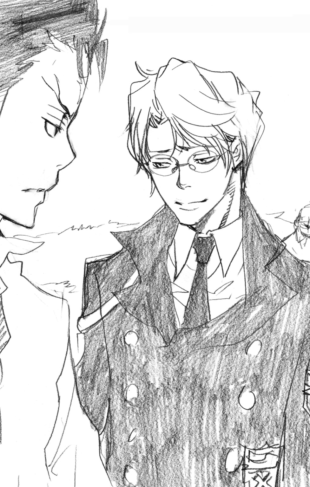
「だが、てめぇなんだろ」
オッタビオの目を、真正面からにらみつけるＸＡＮＸＵＳ。
その威圧感は、そばで見ている者さえもふるえあがらせるほどだった。
しかし、オッタビオは平静さをくずさなかった。
「それが私の役目でしたから......」
眼鏡をかけなおし、口もとにあわい笑みをうかべる。
「独立暗殺部隊ヴァリアー副隊長であった――私の」
＊
闇につつまれた海を疾走する一隻のボート。
いっさいの明かりをつけずに進むその行為は、地上と違って障害物のほとんどない海上とはいえ、かなりの危険をともなっていた。
しかし、ボートに乗っている五人に、おそれる様子はみじんもなかった。
「ぉい、このままでいいのかマーモン？」
「うん。そのまままっすぐで。何かあったら、すぐに教えるよ」
ボートを運転していたスクアーロの問いかけに、マーモンとよばれたちいさな人影がこたえる。
と、ふいに、その口から白いものがこぼれた。
寒い日の吐息のようなそれは、あっという間にまわりに広がっていき、一面の霧となってボートをつつみこんだ。
「さっすがねぇ、マモちゃんの術は」
ルッスーリアが、感動したというように手を重ねあわせる。
「このまま白いベールにつつまれて、島まで一直線ってとこかしら」
「いーや。そうカンタンにいかねんじゃね？」
ナイフを手にした少年――ベルフェゴールがぽつりとつぶやく。
「なーんかイヤな予感すんだよね、王子的に」
９月17日 AM00：50
夜の海岸に、重いブレーキ音がひびいた。
到着したのは大型のコンテナを搭載したトラックだった。運転席から降りた男がオッタビオのもとにかけよってくる。そして、まわりに聞こえないように何かを耳打ちした。
「......そうですか」
オッタビオもまた小声で指示を伝えると、男はうなずいて車のほうへと戻っていった。
「さて......」
波打ち際へと視線をむけるオッタビオ。
そこでは、ＸＡＮＸＵＳがふたたび無線機にむかって話をしていた。オッタビオの推測どおりなら、その相手は独立暗殺部隊ヴァリアーの隊員たちだろう。
ボンゴレの中にあって影の最強部隊としておそれられたヴァリアーだったが、リーダーであったＸＡＮＸＵＳとともに反乱事件をおこしてからは、その活動は事実上の無期限停止へと追いこまれた。部隊の存続だけはかろうじてみとめられたものの、本部の厳重な監視下におかれたという――ただ一人、反乱に加わらなかったオッタビオをのぞいて。
それから八年がたち、彼らの存在はボンゴレ内部でも忘れられかけていた。
しかし、ヴァリアーは、いまふたたび息を吹き返そうとしていた。
と――
「ＸＡＮＸＵＳ様」
オッタビオが、ふたたびＸＡＮＸＵＳに近づいていった。
そして、凜とした声で言った。
「どうかおやめください。もうこれ以上は......」
ドゴッ！！！
「ぐっ！」
背をむけたまま放たれた裏拳が、容赦なくオッタビオの顔面にたたきこまれた。
「ＸＡＮＸＵＳ......さま......」
ひざをついたオッタビオは、顔をおさえながらも彼にむかって話し続ける。
「あのときも......そうでしたね......」
ぴくりと、ＸＡＮＸＵＳがかすかに反応した。
「私がもっと強く止めるべきだった。そうすれば、あなたがボンゴレの反逆者として処罰されることも......」
「オッタビオ」
ＸＡＮＸＵＳが口をひらいた。怒りに満ちているものかと思いきや、それはおどろくほど淡々とした声だった。
「オレは......誰だ？」
「ＸＡＮＸＵＳ様......？」
思いもかけない言葉におどろくオッタビオだったが、すぐに真剣な顔になり、
「あなたは名前に『Ｘ』を二つもつお方。ボンゴレⅨ世の御曹司にして、幼いころより私のつかえる主――将来のボンゴレⅩ世たるお方です」
「なら、やめる理由はねえ」
ふりかえったＸＡＮＸＵＳの目が、オッタビオを強く見すえる。
「オレのものであるボンゴレのために、オレが動くのは当然だ」
オッタビオがちいさく息をのんだ。
そして、つらそうに表情をゆがめ、ふたたび口をひらく。
「それでも......今回はあなたが動くべきではありません」
ふたたび殴られてもかまわない。オッタビオの声には、そんな強い意志がこもっていた。
「ヴァリアーは、成功率が九十パーセント未満の任務にはかかわらない。そうでしたね？」
「ああ」
「護衛をつれたマフィア幹部たちが拘束されたことから、マレ・ディアボラを占領したのは、かなりの力をもった集団だと思われます。そんな敵を相手に、しかもろくに情報もないいまの状態では、いくらスクアーロたちとはいえ......」
「てめぇらしいな、オッタビオ。外面は老けたが、中身は何も変わりゃしねえ」
ＸＡＮＸＵＳが冷笑をうかべる。
「カスザメどもじゃ、勝てねえか？」
「そういうことを言っているのではありません！」
冷静さをたもっていたオッタビオが、語気を強める。
「あまりにもあなたにとってリスクが大きすぎる......そう言っているのです」
そしてオッタビオは、訴えるような目でＸＡＮＸＵＳを見あげた。
「たしかに人質の救出がうまくいけば、あなたにとって大きな成果となる。八年前の事件によって失われた名誉を回復する助けとなるかもしれません」
「..................」
「ですが、失敗すればあなたはヴァリアーという手足を失うことになる。さらに、活動を禁じられているヴァリアーを勝手に動かしたことで、あなたはその責任まで負わされることになる。いえ......」
ＸＡＮＸＵＳから目をそらし、胸に手を当てるオッタビオ。
「責任は私がいくらでも負います。マレ・ディアボラを占領されたのも、元はといえば私の管理が甘かったため」
そして彼は、ふたたび顔をあげてＸＡＮＸＵＳの目を見つめた。
「これは私がやらなければならないことです。大ボンゴレの誇りを守るため......島にいる人質はかならず私が救い出します」
その言葉には、悲壮なまでの決意が感じられた。
人質を無事に救出することは、ボンゴレの総力をあげても困難と言わざるを得ない。仮に全員を無傷で救い出せたとしても、島の管理者としてオッタビオが今回の事件の責任をとらされることはあきらかだ。
だからこそ、よけいにＸＡＮＸＵＳをまきこみたくなかったのかもしれない。
「まだ遅くはありません。いますぐスクアーロたちを止めて......」
グイ――
「う......」
オッタビオの言葉が止まる。いや、止められたのだ。
ＸＡＮＸＵＳに、とつぜんほおをつかまれたことによって。
「やっぱり老けたぜ......おまえは」
八年という時間の流れを確かめるかのように、ＸＡＮＸＵＳの指が、かすかにうかびはじめたオッタビオの顔のしわをなぞる。
「てめえに用があるのはこれからだ。この程度のこと、さっさとカスザメどもに片づけさせる。すべては......それからだ」
オッタビオの顔から手を放し、ＸＡＮＸＵＳは強く言い聞かせるようにつぶやく。
「てめえはオレに逆らうな」
しかりつけたのではない。他人には見えない二人だけの絆をうかがわせるような、そんな熱をもった言葉だった。
＊
「ベルがさっき言ったことは正しいよ」
すました顔でそう言ったのは、マーモンだった。もっとも、フードですっぽり顔をつつみこんでいるので、はっきりとした表情はわからないが。
「いまさら何を言っているのだ、貴様！」
こちらは、とても落ち着いているとはいえない顔で、レヴィがかみついてくる。
「まさか臆病風に吹かれたというのか！ 貴様などいなくても、オレたちだけでミッションは......」
「こっちは、キミがいないとこまるんだけどね、レヴィ」
思いがけない返しで、言葉につまるレヴィ。
「ぬ......何を......そのような当たり前の......」
「島にいるやつらは、高性能の暗視装置をもっている可能性が高い」
マーモンの言葉が、船内の空気をスッとしずめた。
「僕の幻術なら、それでもバレないって自信はあるんだけど、万が一ってことも考えないとね。最初が肝心だからさ」
どこか気楽そうだったマーモンの声が、真剣みを帯びる。
「こっちも大金をもらってるんだ。仕事は完璧にこなしたい」
「く......金の亡者め。オレは貴様などと違って、ボスのために働くのに何の見返りも求めては......」
「で、どうするの？」
マーモンが、うるさそうにレヴィの言葉をさえぎる。
「やるの？ やらないの？」
「ぬ......」
フードの奥からするどい眼光で射抜かれ、思わず声を失うレヴィだったが、
「......そんなことは決まっている」
すぐさま、そう言い返すと、
「オレは作戦のために全力をつくすだけだ！」
シュラン！
背中にさしていたサーベルのような武器を、いきおいよく抜き放った。
９月17日 AM01：15
それは、とつぜんの変化だった。
不吉に空気をふるわせる――雷鳴。
そんな気配などまったくなかったというのに、暗い闇につつまれた海のかなたに出現していたのは、断続的に光を明滅させる黒雲だった。
それはちょうど、マレ・ディアボラ島の上空をただよっていた。
「レヴィか......」
オッタビオが、ハッとしたようにつぶやいた。
「レヴィの雷で敵の暗視装置を一時的にマヒさせる。そういう作戦ですか......」
ＸＡＮＸＵＳは相変わらずにこりともせず、オッタビオの言葉にもこたえようとはしなかった。
「もはや......止められないのですね」
力なくつぶやくオッタビオ。
と、その目に、にわかに力がもどる。
「ここには人質奪還のため私が集めた部下たちがそろっています。その戦力も投入すれば......」
「邪魔すんな、カスが」
冷たくオッタビオの提案をはねのけるＸＡＮＸＵＳ。
「カスどもがうじゃうじゃ集まったところで役には立たねえ」
「ですが......」
なおも食い下がろうとしたオッタビオだったが、すぐに言葉をのみこんだ。これまでのやりとりからも、彼が他人の意見をうけいれないのはあきらかだった。
オッタビオは、島のほうを見つめ、祈るように目を閉じた。
＊
ドサッ。
ルッスーリアの足もとに、全身から力を失った男の身体が倒れた。
彼はいっさいの武器を使わず、身につけた格闘の技だけで、音もなく敵をしとめてみせた。
「残念だわー。もっと時間があったら、たーっぷり楽しめたのに」
たったいま敵を倒したばかりとは思えないほど、明るく言うルッスーリア。
その隣では、
「しししっ」
もう一人の敵を倒したベルフェゴールが、楽しそうに笑っていた。彼は天才といわれるほどのナイフの使い手で、ルッスーリアと同じく悲鳴一つあげさせず敵を葬っていた。
「一匹だけじゃ、なんかもの足りないっつーか。二匹ともオレにやらせてくれりゃーよかったのにさ」
「あら、そんなこと言わないでよ、ベルちゃん。独りじめは、な・し・よ♪」
「ぉい！ ムダ口たたいてんじゃねぇぞお！」
近づいてきたスクアーロが、二人をしかりとばす。
マーモンの霧、そしてレヴィが電気傘とよばれる武器で発生させた雷によって、一同は見張りの目をすりぬけることに成功した。
島に上陸した彼らは、さっそく近くを歩いていた見張りの男二人を始末していた。
「それにしても、このコたち、ホントにいろいろつけちゃってるのねぇ。せっかくのいいカラダが隠れちゃうじゃない」
倒れた男を不満そうに見おろすルッスーリア。
彼らは、防弾ベストと暗視装置つきゴーグル、それに自動小銃で武装していた。へたなマフィアなど勝負にもならないプロの装備だ。実際、まともに正面から戦えば、ヴァリアー幹部の実力をもってしても苦戦はまぬがれなかっただろう。
しかし、彼らは暗殺者だ。
相手に気づかれず、まわりにも気づかれないようすみやかにターゲットを消す方法は、いくらでも心得ている。
「おい、マーモン。残りの数と配置を教えやがれ」
「現場でのナマ情報は別料金だよ」
「ちっ......あとでＸＡＮＸＵＳにいくらでももらいやがれぇ」
スクアーロの言葉に満足そうにうなずくと、マーモンはローブの中から紙片をとりだして、いきおいよく鼻をかんだ。
粘写――遠く離れたターゲットの情報を写し出すというマーモンの能力だ。
「ム......聞いてたより人数がいるね」
「何人だぁ？」
「建物の外にいるのが八人。中には十人だね」
「十八人か......」
「一人でも逃がしたりすると厄介だよ」
「ああ。例のあれをもち逃げでもされたら、台無しだからなぁ」
マーモンから粘写された紙を受け取ると、スクアーロはすぐに指示を出した。
「ベルはオレについてこい。ルッスーリアとレヴィは、外にいる見張りのやつらを全部片づけろ。逃げようとするやつの始末もやっとけぇ」
「りょーぉかい」
「私に、お・ま・か・せ♪」
うなずくベルとルッスーリア。しかし、やはりというか、
「待て。なぜ、オレが外で見張りの後片づけなどしなければならん」
レヴィの細い目が、嫉妬にギラリと光る。
「スクアーロ......貴様、手柄をオレにとられまいとして......」
「くだらねぇこと言ってんじゃねぇぞぉ」
相手をする気もないというように、背をむけるスクアーロ。それが、かえってレヴィの怒りに火をそそぐ。
「貴様！ オレの目を見て話を......」
「いいかげんにしなよ、レヴィ」
彼を止めたのは、またもマーモンだった。
「こんなことで時間をとられて作戦失敗なんて、僕はイヤだよ。約束の報酬もパーになるじゃないか。最初から、現場の指揮をとるのはスクアーロってことになってただろ」
「正直、オレはそれにも納得いかなかった。なぜオレでなくスクアーロが......」
「ボスの判断がまちがってたってこと？」
それが決め手だった。レヴィの文句がピタリと止まる。
彼がＸＡＮＸＵＳにささげる忠誠心は誰よりも大きい。八年という時間がたっても、それはちいさくなるどころか、むしろ神へささげる信仰というレベルにまで達していた。
（だから、まかせられないこともあるんだよね。マジメすぎるやつって、けっこー暴走とかするしさ）
心の中でつぶやくマーモン。
今回の作戦の『真の目的』を知らされていたのは、スクアーロとマーモンだけだった。
「ねーねー、よく考えてみてよ、レヴィぃん」
そこへルッスーリアが割りこんでくる。
「あなたの雷の技って、ちょっと目立ちすぎちゃうでしょ。外ならともかく、屋敷の中でピカピカーッなんておかしく思われちゃうじゃない」
「それは......」
「ボスは、ちゃーんとあなたが活躍できる場所をわかってるのよん」
その言葉で、レヴィの目に一気に活力がもどってくる。
「ボスが......オレを......」
「そうそう」
笑顔でうなずいてみせるルッスーリア。
そんな二人を見て、マーモンは「ふぅん」と感心したような息をもらした。
かたくななレヴィの心をやわらげるのに、誰とでもうちとける柔軟さをもったルッスーリアを組み合わせるのは、最良の判断といえた。
（人の使い方もわかってるみたいだね、スクアーロは。ボスが目をかけるのもわかるかも）
と、そこへスクアーロの号令がかかった。
「行くぞぉ、おまえら！」
そして、あらためて作戦の第二段階がはじまった。
９月17日 AM01：45
大きな変化のないまま、三十分が過ぎた。
ＸＡＮＸＵＳは無言のまま立ち続け、オッタビオも何も言わず彼の後ろにひかえていた。
と、
「オッタビオ」
ＸＡＮＸＵＳが、ふいに口をひらいた。「てめぇ......いま何歳になった？」
「え......」思いがけない問いかけに目を丸くするオッタビオだったが、苦笑とともに眼鏡をかけなおした。
「ハハ......もう三十のなかばをすぎましたよ」
まぶしそうにＸＡＮＸＵＳの横顔を見るオッタビオ。
「あなたは、ちっとも変わらない。初めて会ったときから――」
その目が、過去をなつかしむように細められる。
「９代目からあなたの補佐を命じられたとき、私は本当にうれしかった。ボンゴレ10代目となる方のおそばにいることを許されたのです。こんなにうれしいことはない」
「..................」
「私は、あなたにとって何の力にもなれなかった。その無力さは、いまでも悔しく思っています。ですが、あなたは......こんな私でもそばにいることを許してくれた」
「何も変わらねえよ。てめぇもほかのやつらも、みんなカスだ」
侮辱されつつも、オッタビオの目はさらに熱をおびていく。
「誰に対してもひざを折らず、誰よりも高みにあろうとし続ける。その心が、多くの人間をひきつけ、我々に力強い未来をさししめしてくださる」
たしかな想いを感じさせるように、彼はつぶやく。
「あなたは......それでいい」
＊
マレ・ディアボラ島迎賓館・大ホール――
普段なら、ゲストを集めた大がかりなパーティーなどがひらかれるこの場所に、百人をこえる人質のマフィアたちがすべて集められていた。
見張りとして立っている男の姿は六人。そのすべてが自動小銃を手にし、防弾装備で身体をおおっていた。スキのないプロを思わせる動きもあわせて考えれば、たった六人とはいえ下手に戦いをいどむのは危険すぎる相手だった。
危険な裏社会をのりこえてきたマフィアの者たちにもそれはわかるのか、武装解除された彼らに、積極的に抵抗しようという気配は感じられなかった。
しかし、そんな彼らを、武装した男たちはなおも油断なく監視していた。
その完璧さが――逆にスキを生んでいた。
（うしし......あいつら、ぜーんぜんこっちに気づいてなくね？）
（だまれぇ。よけーなこと言ってんじゃねーぞぉ）
（はいはい）
緊張感のない笑みをうかべるベル。
一方のスクアーロは、じっと見張りの男たちの様子をうかがう。
（こっちの準備は終わった。あとはマーモン......てめぇがさっさと......）
そのときだ。
豪華なシャンデリアを始めとしたホールの明かりが、いっせいに消えた。
見張りの男たちの間にも、さすがに動揺が走る。
と、次の瞬間、ホールでもっとも大きな正面の扉が、勢いよくあけ放たれた。
見張りの男たちは、すぐさま反応した。
手にした銃をすばやく扉のほうへむけ――
ズガガガガガガガガガガガガガガガガガガガガガガガガガガガガガガカガガガガガガガガガガガガガガガガガッッッ！！！！！！
逃れようのない銃弾の雨が、嵐となって荒れ狂った。
９月17日 AM02：05
事態が動いたのは、深夜の二時をすぎたころだった。
振動する携帯電話をとり出したオッタビオの顔に、緊張が走った。
「......犯人からです」
ＸＡＮＸＵＳは何も言わなかった。
オッタビオは、かすかに青ざめつつ、電話を耳もとに当てた。
そして、マレ・ディアボラを占領する敵と彼の会話がはじまった。
オッタビオは主に相手の話を聞くほうにまわり、そばにいる者たちに会話の内容がわかるような言葉はほとんど口にしなかった。
ただ一言「最初に言った金額は払う。それは何度も言っているでしょう！」という、かすかにいらだちを感じさせる強い言葉だけが、まわりの者にもはっきりと聞きとれた。
そのまま、オッタビオの顔は、どんどんむずかしいものになっていった。
と、
「！」
オッタビオの目が、ハッと見開かれた。
電話から、もれ聞こえてくる怒号。それは怒りだけでなく、あせりをも感じさせるような大声だった。
「落ち着いてください。まだ、そうと決まったわけでは......」
さらに電話からひびいてくる怒りのさけび。
そして、すべての音声が、唐突に途切れた。
「..................」
オッタビオは携帯電話をしまい、こわばった顔をＸＡＮＸＵＳにむけた。
「気づかれたようです......スクアーロたちのことが」
＊
ガガガガガガガガガガガッッ！！！
はげしい銃声が、ホールをうめつくすようにひびきわたった。
やがて、銃声は一つ、また一つとやみ、暗闇の中に静寂がもどっていった。
替わってホールにとどろいたのは男たちの大声だ。「はやく明かりをつけろ」「死体を確認するんだ」
だが、その声は銃声と同じように一つ、また一つと消えていった。
そして、ホールにふたたび明かりがともった。
「！！！」
人質のマフィアたちから、おどろきの声があがった。
なんと、六人の見張りの男たちが、一人残らず床の上に倒れていたのだ。明かりが消えていたのは、一分あるかないかの短い時間だったというのに。
そして、替わりに立っていたのは、黒い服装をした二人――スクアーロとベルだった。
「これで終わりかぁ？」
「そうみたい。なーんか、思ってたよりぜんぜんあっけないってカンジ？」
「外のやつらみたいに、暗視装置をつけてなかったからな」
作戦自体は、きわめて単純なものだった。
電源室にむかったマーモンが、人質の集められたホールの照明を落とす。その間に、暗殺者として暗闇になれているスクアーロとベルが敵を始末する。
しかし、むやみに襲いかかったのでは、反撃によって傷を負わされる可能性がある。人質が殺されるという事態も考えられる。
だから、明かりの消えた直後に派手に扉をあけ、敵の注意をそちらにむけたのだ。ちなみに扉は、ベルがナイフのついたワイヤーを使って離れた場所から動かしていた。
すでに空調ダクトからホールに侵入していた二人は、銃撃がやみ、敵の気がゆるんだスキをついて一気に襲いかかったのだ。
「お......おい......」
ぼうぜんとしていたマフィアの一人が口をひらいた。
「おまえたちは......いったい......」
「あぁン!?」
スクアーロが、うるさそうな顔でその男をにらみつける。
「なんで、てめぇらなんかにそんなこと......」
「まーまー、いーじゃん。復活をアピールするためにも言っとけば」
「チッ」
気に入らなさそうに舌打ちしつつも、スクアーロは注目しているマフィアたちにむかって声をはりあげた。
「ぉぉぉい、聞きやがれぇ！ マヌケなてめーらを助けてやったのは、ボンゴレ独立暗殺部隊ヴァリアー！ そのリーダーのＸＡＮＸＵＳだぁ！」
その瞬間、さざなみのように一同におどろきが広がっていった。
「まさかあのＸＡＮＸＵＳが......」「ヴァリアーは殺し屋だけの部隊じゃなかったのか......」などとかわされる言葉を聞いて、スクアーロは満足そうにちいさな笑みを見せる。
「おい、ベル。てめーは、ここに残ってこいつらのことを守りな。ぜってー、やらせんじゃねーぞぉ」
「スクアーロはどーすんの？」
「オレはこんなところにいつまでもいられねえんだよ。まだ、大事なことが終わってねぇからなぁ」
「マーモンと話してた『例のあれ』ってやつ？」
スクアーロの口もとから笑みが消える。
替わって、ベルの「しししっ」と笑う声がもれる。
「ホント、スクアーロって、そーゆーとこニブくね？ ま、王子以外は気づいてないみたいだけどさ」
「おい、てめぇ......」
「怒んなって。オレは邪魔するつもりないからさ。めんどいことキョーミないし」
「..................」
スクアーロはいまいましそうにベルをにらんでいたが、サッと背をむけると足早にホールから去っていった。
「うししし......おっもろいなー、バカからかうのって」
そのとき、満面に笑みをうかべた男がベルに話しかけてきた。
「おい、キミ！ これでワシらは助かるのだな！」
「そーなんじゃねーの。でも、いちおー、完全に敵を制圧するまでここにいたほうがいいと思うよ」
「しかし、ワシらは一刻も早く安全なところに......」
「だーいじょぶだって。アンタらのことは、オレが守るからさ」
ふたたび男の顔にホッとした笑みが広がる。
「つーわけで、ぜんぶ片づくまでのヒマつぶしに......」
ベルが、男の肩に手をまわした。
「王子と目ン玉くりぬきゲームして遊ばない？」
男の笑顔は、一瞬で凍りついた。
９月17日 AM02：15
「ＸＡＮＸＵＳ様」
そのよびかけには、いままでにない強いあせりがあった。
しかし、ＸＡＮＸＵＳは変わらず、淡々とした表情のままだった。
「万が一のことを......お考えください」
「ヴァリアーに失敗はねぇ」
「しかし現に......」
「現に何だ？」
ガッ！ ふたたびＸＡＮＸＵＳが、オッタビオの前髪をつかむ。
しかし、オッタビオは目をそらそうとはしなかった。
「てめーはここでじっとしてりゃいいんだよ。何度もよけいなこと言ってんじゃねえ」
「いいえ、言わせてもらいます。スクアーロたちが今回のことで失態を犯せば、いくら私がかばおうと、あなたにまでその責めがおよぶ。こうして、あなたが堂々と動いているだけでも、よけいな疑いをもたれるかもしれない。あなたは過去に、それだけのことをしてしまっているのですよ」
「..................」
「あなた自身のために......いまはどうか、その姿をお隠しください」
「..................」
「ＸＡＮＸＵＳ様！」
それは、まわりで見ている者の心さえもつかむような、真剣な訴えだった。
しかし、
「......フ............」
ＸＡＮＸＵＳの口からもれる吐息。それは、近くに押しよせる波の音にも負けない哄笑となってひびきわたった。
「ハハハハハハハハハハハハハハハハハハハハッ！ 言うじゃねえか、オッタビオ！ まったく、てめぇらしいぜ！」
「ＸＡＮＸＵＳ様......」
力なく肩を落とすオッタビオ。
自分の声はもちろん、ＸＡＮＸＵＳには誰の声もとどかない。そのことにあらためて気づかされたというように。
そして一瞬――
オッタビオは、この場でいままで見せたことのない表情をうかべた。
＊
ガガガガガガガガガッ！！！
「！」
廊下に自動小銃の銃声がひびきわたった瞬間、スクアーロはすかさず近くの物陰へと飛びこんだ。
「......チィッ！」
左肩に走る焼けるような痛み。
油断したつもりはなかった。ホールの銃声で、残った敵に気づかれていることは予測できていた。侵入者をむかえうつ態勢をととのえていることも。
しかし、気持ちにあせりがあったことは否定できない。
あるいは『例のあれ』だけがターゲットなら、もっと簡単にやれたのかもしれない。
しかし、ＸＡＮＸＵＳの命令は「すべてを完璧にこなせ」だった。
（やってやるぜぇ、ＸＡＮＸＵＳ......てめぇの野望のため......てめぇにかけたオレのためになぁっ！！！）
スクアーロは物陰から飛び出した。
「うおおおおおおおおおぉぉっ！！！」
ズガガガガガガガガガガガガガガガガガガガガガガガガガガッ！！！
「当たらねえぞぉ、ぉい！ こんなモンにオレの剣が負けるかあっ！」
毎分七百発をこえる速度で連射される銃弾の中を、スクアーロは走りぬけた。
その途中、左腕の剣をいきおいよくふるう。剣身から小型の爆薬が発射され、小銃を撃つ男たちの足もとで爆発した。
「くらえぇっ！！！」
相手がひるんだ瞬間、スクアーロは一気に距離をつめた。
しかし敵もすぐさま体勢を立て直し、スクアーロに銃口をむける。
「鮫の牙ぉっ！！！」
空間をかじるような刺突の雨と、高速の銃弾の雨が正面から激突した。
９月17日 AM02：20
「もうやめやがれ、オッタビオ」
いつまでも続くかと思われた笑い声のあと、ＸＡＮＸＵＳは元の表情にもどって、そう言った。
冷静さをたもとうとするオッタビオだったが、困惑は隠せなかった。
「すべて......あなたにまかせろということでしょうか......」
「ハァ？ 何言ってやがんだ、カスが」
ＸＡＮＸＵＳは、不機嫌そうに眉をひそめる。
「もう芝居は、いいって言ってるんだろうが」
その瞬間、眼鏡をかけた端整な顔立ちから、スッとすべての表情が消えた。
「..................」
無言のまま、ＸＡＮＸＵＳから視線をはずせなくなるオッタビオ。
その額を、ひとすじの汗が伝った。
「オレのため、か？ 本当に変わらねぇ......心にもねえことをそうやって口にできるところがな」
「..................」
「しかも、肝心の芝居も三流ときてやがる。てめぇは本当にどうしようもねぇカスだ」
話し続けるＸＡＮＸＵＳと対照的に、オッタビオは沈黙を続けていた。
「オッタビオ。てめぇ、なんでカスザメどもが失敗するなんて言いやがる？」
「..................」
「万が一の可能性？ ハッ、違うな。てめぇは敵の正体を知ってるんだよ」
「..................」
「そうだろう、オッタビオ」
そして、長い沈黙のあと――
「......そのとおりです」
オッタビオが口をひらいた。
彼の目は、いつもの落ち着きを取りもどしていた。
「マレ・ディアボラを襲ったのは、イタリア軍に所属していた元軍人たちです。だからもともと軍事用に造られたあの島の地理にくわしく、それが襲撃の成功につながったのでしょう」
自分には何もやましいところはない。そう言いたそうな顔で、オッタビオはＸＡＮＸＵＳとむきあう。
「地の利は敵にある。さらに武装した元軍人を相手にしては、スクアーロたちでも苦戦する可能性は高い。私はそういう意味で申しあげたのです」
「そうか......」
つぶやくＸＡＮＸＵＳ。
と、その口もとが、するどくつりあがった。
「やっぱり、てめぇはどうしようもねえ。臆病すぎて、結局すべてをダメにする」
「っ......」
「おまえはオレにこう言いやがった。島を占領したのは『謎の武装集団』だってな。軍人くずれだなんてことは言わなかった。一言もな」
ＸＡＮＸＵＳの言うとおりだった。敵が元軍人だという事実は、まわりにいる部下たちにも知らされていなかった。
「そこが一番の問題だ。オッタビオ、てめぇなんで......」
「敵の正体を隠す必要があったんだ？」
＊
「オレたちの勝利だ！」
大ホールに、レヴィのおたけびが高らかにこだました。
外にいた見張りをすべて倒したレヴィとルッスーリアは、迎賓館へ突入したスクアーロたちに加勢しようとやってきたのだが、こちらでもすでに大方は片づいていた。
人質を見張っていた男たちは倒され、廊下でも三人の武装した男たちが無残な姿をさらしていた。
「これがオレたちの実力なのだ！ 長き間、冷遇されてきたオレたちの！ ＸＡＮＸＵＳ様を頂点とするヴァリアーの真の力なのだ！」
「もうっ。レヴィったら、はしゃいじゃってぇ」
やれやれといった苦笑を見せるルッスーリア。
その隣では、ベルがうるさそうに耳をふさいでいる。
「いいかげんにしろよ、あのムッツリ。ちょっと殺しちゃっていい？」
「大目に見てあげなさい、ベルちゃん。いつも無愛想なレヴィがあんなふうによろこぶなんて、それだけうれしいってことでしょ」
「知らねーっつーの」
気にいらないというように、ベルはそっぽをむく。
「つーか、いま気づいたんだけどさー。これって結局、オッタビオのやつの手柄になるんじゃね？」
オッタビオ――その名前を聞いて、ルッスーリアも複雑そうな表情になる。
「そうねぇ......カレだったら、ありえるかもねぇ」
「ぜってー、やるだろぉ。オレ、あいつ、キライなんだよね。ボスがいなくなったあと、あいつだけボンゴレの中でのしあがってさ」
「でも、ボスがもどってきてくれたのよ。カレだって、また昔みたいにボスのために働いてくれるわよ」
「ふーん......」
そうは思えないという顔で、ベルは唇をとがらせた。
「で、オレたち、これからどうすればいいわけ？」
「それは、現場のリーダーに聞かないとね」
「そーいえば、スクアーロのやつ、何やってんわけぇ？ マーモンも明かり落としてそれっきりだしさぁー」
「まあまあ落ちつきなさいよ。たぶん、そんなに時間はかからないわ」
「あー、こんなちゃちー仕事やってるくらいなら、また反乱とかやってさっさとボンゴレを......」
「こーら。ホントにあわてんぼさんね。私たちは二度も失敗するわけにはいかないじゃない。これは、計画のために必要なことってボスが言ってたでしょ」
「でもさぁ......」
「いいから待ちなさい。これくらい待てるでしょう。だって私たちは......」
ルッスーリアの言葉に、強い想いがこもる。
「八年も待ったんだから」
９月17日 AM02：30
オッタビオの沈黙は、長かった。
その表情には、すでに冷静さのかけらもない。頭の中で必死に考えをめぐらせているのか、きょろきょろと落ち着きなく目玉を動かしている。
そして、ようやくしぼり出された一言が、
「隠してなど......隠してなどはいません......」
自分のその言葉に後押しされるようにして、すこしずつオッタビオの顔に落ち着きがもどっていく。
「隠していたなどと、そういうふうに思われるのは心外です。たしかに私は、交渉を通じて敵が元軍人の集団であることを知っていました。それをお知らせしなかったのは、言いわけできない私の落ち度です。しかし意図的に隠していたということは......」
なめらかにつむぎ出されるオッタビオの言葉。それが――
「っ！」
止まった。
先ほどのように、髪をつかまれたり、殴りつけられたりしたわけではない。
それどころか、ＸＡＮＸＵＳは、指一本動かしていなかった。
ただ、オッタビオを無言でにらみつけていた。
その目に――怒りの炎をうかべて。
「う......く............」
オッタビオの顔がふたたび真っ青になり、だらだらと汗がこぼれ落ちる。
そして、とどめをさすように、ＸＡＮＸＵＳが口をひらいた。
「てめぇは軍の下っぱと裏で取り引きしてやがった。金と引きかえに、軍の武器を横流しさせてやがったんだ」
「..................」
「しかし、それが軍の中で明るみに出た。てめぇは、助けを求めてきたやつらを、もう役に立たねぇと切り捨てた。それで、やつらは逆上しやがった。おまえが主催するパーティーを襲撃して、金を手に入れるついでにてめぇを破滅させようと......」
「なぜ、そこまで知っている！」
ふるえる声で、オッタビオがさけんだ。
「なぜ......ずっと眠っていたあなたが......そこまでのことを......」
その瞬間、ＸＡＮＸＵＳの目が、獲物を見つけた獣のような光を放った。
「知ってんだろ？ ボンゴレの血筋だけがもつ力を」
「まさか『超直感』で知ったと？ そんなことがありえるはずがない！ なぜなら、あなたは......」
「オッタビオ！」
ＸＡＮＸＵＳが笑った。
怒りとよろこびの混じりあったような、凄絶な笑みだった。
「ついに......認めやがったな」
「え......？」
「これではっきりした！ やっと、あのクソいまいましい八年前に一つケリをつけることができる！」
興奮して語気を荒くするＸＡＮＸＵＳを前に、オッタビオはただあぜんとすることしかできなかった。
「ＸＡＮＸＵＳ様......いったい......」
「わかんねえのか、カスが」
冷たくオッタビオを見すえるＸＡＮＸＵＳ。
「てめぇは二つも認めちまったんだよ。オッタビオ......てめぇ、どうしてオレがいままで〝眠っていた〟ことを知ってんだ？」
「！」
オッタビオの表情が、ビクッと引きつる。
「オレが９代目の『零地点突破』で眠らされたこと......それを知ってたっつーことは......」
「教えていただいたのです！ あなたのことを心配する私に９代目が......」
「そして、もう一つ！ てめぇ、ありえねぇと言ったな......オレに『超直感』が」
「っ！！！」
さらに、隠しようもないほど、オッタビオの顔がはげしくゆがむ。
「そ、それも......９代目が......」
「ありえるわけがねぇだろ？ あの偽善者ぶったじじいが、オレの秘密をペラペラしゃべるなんてことがなぁ。つまり、おまえはオレとじじいが話すのを聞いてたってことだ。オレがじじいに負けて、眠らされたあの場所でな！」
「..................」
「八年前、てめぇはオレの反乱計画に一人だけ従わなかった。あの戦いの場にいるはずがねぇ。それがいたっていうことは、てめぇはじじいの側についてたってこと......」
ＸＡＮＸＵＳが、静かにオッタビオを指さす。
「オレをじじいに売ったのは、てめーだな」
沈黙――
それと裏腹の大きすぎる衝撃が、オッタビオの部下たちの間をかけめぐっていた。
――オッタビオが、今回の事件の犯人とつながっていた？
――八年前、オッタビオがＸＡＮＸＵＳを裏切っていた？
何も事情を知らないほとんどの者は、唐突すぎる二人の会話にまったくついていけなかった。それでも感じることだけはできただろう。
ＸＡＮＸＵＳとオッタビオをとりまく空気が、加速度的に緊張感を増していったことに。
「......ふぅ」
ため息が空気をふるわせた。
それは、オッタビオがもらしたものだった。
「すこし無理があるでしょう、それは」
苦笑まじりに、オッタビオは言った。
その表情に、先ほどまでの、小動物のようなおびえはなかった。
開き直ったというのではない――仮面の裏の本性がにじみ出たという印象。
それは、マフィアの幹部まで登りつめる実力をもった男の顔だった。
「あなたを止めようとして、みずからの危険もかえりみず戦場にまで行った――そういう考え方だってできるでしょう。いや、そう考えるほうが自然だと......」
言葉の途中でふたたびため息をもらし、オッタビオは頭をふった。
「やめましょう。どうせ、あなたはすべて知ってしまっているようだ」
「..................」
ＸＡＮＸＵＳの顔から、笑みは消えていた。
その視線は、油断なくオッタビオにむけてそそがれている。
「あなたの言うとおり、本当に私は芝居が下手です。あなたの怒りにおびえる芝居のつもりが、つい調子にのってよけいなことまでしゃべってしまいました。こんなつもりではなかったのですが......」
スッ――
流れるような動きで後ろに下がり、ＸＡＮＸＵＳとの距離をあけるオッタビオ。
「終わりにしましょう」
そう言って、彼が手をあげた瞬間、
ブォォォォォォォォォォォォォォォォォォォォォォォォォォォォォォォォォォォォォォォォォォォォォォォォォォォォォォォンッ！！！
闇を切り裂く閃光が、ＸＡＮＸＵＳを貫いた。
＊
「待てぇぇっ！！！」
スクアーロの声で、ボートに乗りこもうとしていた男の動きが止まった。
「なんでここにいるか聞きたいかぁ？ わかってたんだよ、ここに逃げるための船があることはなぁ」
男は動きを止めたまま、首だけ回して背後のスクアーロを見た。
「てめぇの仲間はみんなやられたぜぇ。で、一人足りねーって気づいたわけだ」
スクアーロがゆっくりと男に近づいていく。
「てめぇがもってんだろう......『あれ』をなぁ！」
男がいきおいよくふりかえった。
手にした自動小銃をフルオートで発砲する。
「......ぐっ!?」
スクアーロの反応が遅れた。
ズガガガガガガガガガガガガガガッ！！！
銃弾の嵐が、容赦なくスクアーロの身体を吹き飛ばした。
しかし――
「っ!?」
ズバァンッ！
背後からの斬撃をうけた男は、信じられないという顔をしたまま、前のめりにその場に倒れ伏した。
「終わったなぁ」
動かなくなった男を見おろしていたのは、銃弾をうけたはずのスクアーロだった。
「まだだよ。こいつのもってる『あれ』をボスに渡さないとね」
宙にふわふわとうきながら、そう言うマーモン。
幻術でスクアーロの幻をつくり、敵の注意をそちらにむけさせたのは彼だった。
「とりあえずみんなと合流して、それから......」
「ぐっ！」
そのときだ。
スクアーロが、苦しそうに顔をゆがめた。
彼がとつぜん感じたのは、戦闘で負った傷とはちがう痛みだった。
ジクジクとうずき出した左手。それは八年前に自ら斬り落とした――ＸＡＮＸＵＳの野望にかけた覚悟の証。
「まさか......ＸＡＮＸＵＳ......」
おさえきれない悪い予感に、スクアーロの瞳がゆれた。
９月17日 AM02：45
それは、巨人だった。
内側から放たれた閃光によって破壊されたトラックのコンテナ。そこからのっそりと姿をあらわしたのは、横幅の広いがっしりとした身体を灰色の服につつんだ巨大な人影だった。
「さすがじゃないですか。プロトタイプの圧縮粒子砲でも、これだけの威力があるなんてねぇ」
彼の見つめる先では、もうもうと白煙が立ちのぼっていた。
そこにすさまじい熱量が集中したことは、誰の目にもあきらかだった。
グォン......グォン......グォン......――
巨人の身体からひびく不気味な音が、シンとしずまりかえった海岸をふるわせる。
そして、そこに、くつくつと笑う声が重なっていく。
「出てきてくださいよ。あなたが、これくらいでやられるはずはないでしょう」
その直後だった。
白い煙の中から、ＸＡＮＸＵＳがゆらりと姿をあらわした。
表情こそ平静であったが、着ていた黒い服はところどころが焼けこげ、無残な姿をさらしていた。
「ヴェッキオ・モスカ！」
オッタビオの声とともに、その大きな身体からは信じられないほどのスピードで巨人が移動した。そして、オッタビオを守るように、ＸＡＮＸＵＳの前に立ちはだかる。
「それが......おまえが軍から手に入れた兵器か......」
「正確に言えば、軍の研究レポートをもとに、私が作りあげたものです」
オッタビオの目が、興奮の熱をおびる。
「この『モスカ・シリーズ』は優秀ですよ。どんな攻撃もはねかえす鋼鉄の巨体に、内蔵された無数の破壊兵器。しかも主人としてインプットされた者には絶対に服従する。まさに究極のファミリーではないですか」
軍の強襲兵器――
それは、人と人とがプライドをかけて戦うマフィアの世界において、あってはならない大きすぎる力。
その許されざる兵器を、ボンゴレ上層部はもちろん、ほとんどの部下にさえ秘密でオッタビオは開発していたのだ。
「これは、もともと島を占領した者たちの鎮圧に使うつもりでした。このモスカが一体いれば、彼ら程度の相手ならおつりが来る。ですが、その前に......あなたが来た」
目をかがやかせ、大きな笑みをうかべるオッタビオ。
「八年ぶりですからねぇ、私もあせりましたよ。しかも、これから片づけようと思っていた相手を、あなたが倒すというのですから」
巨人――ヴェッキオ・モスカの背後で、オッタビオは語り続ける。
「私は作戦を変更することにしました。ヴァリアー復活のため手柄がほしいあなたを利用することにしたんです。あなたたちが成功しても失敗してもかまわない。最終的に、モスカですべて消してしまえばいい」
「......で、てめぇは、またうまいこと言ってボンゴレでの地位をあげるのか？」
「それもいいですねぇ。八年前と同じように」
オッタビオは、うっとりと遠くを見つめる目になる。
「あなたの反乱計画を報告したことで、私はあなたやヴァリアー隊員のように罰をうけずにすみました。逆に、９代目への忠誠が認められ、幹部になる道もひらけた。すべては、あなたのおかげですよ」
オッタビオが、右腕をあげた。
それに反応して、ＸＡＮＸＵＳに両手の指をむけるモスカ。そこに仕込まれていた銃口が、倒すべき敵をロックオンする。
「あなたのあとで、スクアーロたちにも死んでもらいますよ。穏健な９代目の手前、彼らの命を助けるよう願い出ましたが、あなたの言うことしか聞かない者たちなど危険きわまりない」
「......ハッ。できるのか、てめぇに」
「できますよ！ 私はいままでずっとこうやって邪魔者を消してきたのですから！」
興奮に目を血走らせながら、オッタビオはさけんだ。
「消えろ、ＸＡＮＸＵＳ！！！」
そして――
「..............................」
鋼鉄の巨人は――
「................................................」
動きを――止めた。
「.....................モスカ......？」
息をつめて見守っていたオッタビオの口から、乾いた声がこぼれる。
「......どうしたんです、モスカ？ さぁ......彼を殺しなさい」
巨体はぴくりとも反応しなかった。
ＸＡＮＸＵＳへ指の銃口をむけたまま、とうとつにモスカはすべての動きを止めてしまっていた。
「動きなさい、モスカ！ モスカ！！！」
芝居でなく、本当にうろたえるオッタビオを見て、ＸＡＮＸＵＳは冷笑をうかべた。
まるで、最初からこうなることがわかっていたというように。
「おまえのもっていた軍のレポートは、完璧じゃなかった」
オッタビオがはげしく息をのんだ。
「そのモスカは、しょせん旧式のガラクタだ。本当の意味でオレが求めているモスカじゃねえ」
「あなたが......求めている？」
ゆれる瞳が、ＸＡＮＸＵＳをうつし出す。
「てめぇのことも人質事件のことも全部ついでだ。本当にオレがほしかったのは......」
「完全なるモスカだよ」
とつぜん割りこんできた声に、ふりかえるオッタビオ。
「やっぱり、これは旧式だね。こんなわかりやすいところに、緊急停止スイッチがあるなんてさ」
「マ......マーモン......」
活動を停止したモスカの後ろからあらわれたのは、フードをかぶった赤ん坊だった。
彼は、遠く離れた場所へと瞬時に移動できる術を使って、他のヴァリアー隊員より一足早くここへ到着していたのだ。
「ボス、例のものはちゃんと手に入ったよ」
マーモンが取り出したファイルを見て、オッタビオの顔色が変わる。
「まさか、それは！」
「そうだよ。モスカの開発レポートの完全版。キミがこの旧式モスカを使って、やつらから奪い取ろうとしてたものさ」
「あ......う......」
「やつらは、いざというときのためにこれの存在をキミに秘密にしていた。そして自分たちがピンチになって初めて、キミにこの完全版のことを教えたんだ。モスカの開発を進めていたキミはおどろいただろうねぇ」
「........................」
「やつらは、完全版と引きかえに自分たちの保護を申し出た。でも、キミはそこまで面倒を見てやるつもりはなかった。それで今回の事件になったってわけさ」
顔面蒼白になったオッタビオに、もはや先ほどまでの余裕はかけらも残されていなかった。
「最後にやっとオレの役に立てるな、オッタビオ。てめぇが作ったモスカは、オレが完成させてやる。そのときこそ......」
ＸＡＮＸＵＳが、雄々しく両手を広げた。
「ボンゴレが、オレのものになるときだ！！！」
力強い宣言に、オッタビオは圧倒されるように尻もちをつく。
「誰だ......いったい誰なんだ......」
ヒステリックに、オッタビオがさけぶ。
「誰があなたにそこまでのことを教えたぁぁっ！ 誰があなたを、あの眠りからときはなったんだぁぁぁっ！！！」
「てめぇが知る必要はねぇ」
おだやかな声とともに、ＸＡＮＸＵＳはオッタビオの頭をつかんだ。
「かっ消えろ」
一瞬だった。
紅蓮の炎に包まれたオッタビオは、灰となって地面に崩れ落ちた。
「見ていたな、カスども......」
ＸＡＮＸＵＳは、ぼうぜんと立ちつくすオッタビオの部下たちへ顔をむけた。
「ボンゴレに秘密で武器を開発していた裏切り者は、このオレが処罰した。10代目ボスであるこのＸＡＮＸＵＳがな」
誰も何も言えなかった。しかし、
「てめぇらも処罰する」
その言葉に、部下たちから恐怖と絶望の悲鳴があがる。
「モスカのことを知ったやつらを、生かしとくわけにはいかねぇ」
ＸＡＮＸＵＳの手に、ふたたび真っ赤な炎がゆらめき――
夜を染めあげる灼熱の地獄が、その口をひらいた。
以上が――
我らの同志モレッティが遭遇した事件の記録である。
なお、内容に関しては、モレッティの報告に加え、リング争奪戦後に拘束されたヴァリアー隊員の証言も参考にしている。
モレッティは、オッタビオの部下に変装して潜入調査を行っている最中だった。
オッタビオが軍の一部と手を組んで兵器開発を行っているという情報があり、その証拠をつかむためのものだった。
このときモレッティに、ＸＡＮＸＵＳと遭遇することはもちろん、これが後の大事件へつながることになるなど、予測できるはずもなかった。
彼は、ＸＡＮＸＵＳの虐殺行為にまきこまれ重傷を負わされた。自由に仮死状態になれる『殺され屋』という能力があったにもかかわらず、彼は生命の危機にさらされた。それだけＸＡＮＸＵＳの力はすさまじかった。
ケガから快復したあとも、彼はＸＡＮＸＵＳへの恐怖にとらわれつづけた。作戦に参加することはもちろん、まともな報告すら不可能なほど精神的に追いつめられていた。
そんな彼を動かしたのは、門外顧問・沢田家光からの一本の電話だった。
――日本にいる息子の力になってほしい。
そのとき、モレッティは決意した。
人をゴミのように殺すことのできるＸＡＮＸＵＳに、ボンゴレファミリーを渡すわけにはいかない。
日本で出会った心優しき少年にこそ、ファミリーの未来を賭けてみたい――と。
そして彼は立ちあがり、我々のために協力してくれることとなった。
彼が手に入れたモスカの情報があったおかげで、我々はボンゴレ本部突入作戦でからくも命を救われたのである。
ＸＡＮＸＵＳにまつわる一連の事件――
それは複雑にからみあい、いまだすべての真相はあきらかにされていない。
しかし、これだけは断言できる。
正式に認められたボンゴレ10代目・沢田綱吉のもとで、これからファミリーに巣くう闇はすべて浄化されていくことになると。
我々もまた、陰ながら彼を補佐していきたい。
そうすることでまちがいなく――
ボンゴレファミリーは、正しい未来へと歩んでいけるのだから。
ボンゴレファミリー門外顧問秘書 オレガノ
ＰＯＳＴＳＣＲＩＰＴＳ
こんにちは！ 天野明です！
キラキラーンッ！っと
皆様が手にしているのはリボーン小説版第２弾!?
そうなんです！ このオレンジでグリーンな本は
第１弾を応援してくれた皆様のおかげでできた続編なんです！
本当にありがとうございます!!
そしてさすがリボーンを知り尽くしている子安先生です、
またまたリボーンの世界をふっくらと
そして美味しく膨らませてくれました!!
今回も内容盛りだくさん！ ちょっぴりマニアックな要素があって
読み終わる頃に「ニヤリ」な作品ばかり!!
小説版のいい所はマンガと違って舞台やキャラクターの表情を
自由に想像しながら読めるところだと思います。
色々想像して何度も楽しんじゃいましょう!!
天野 明
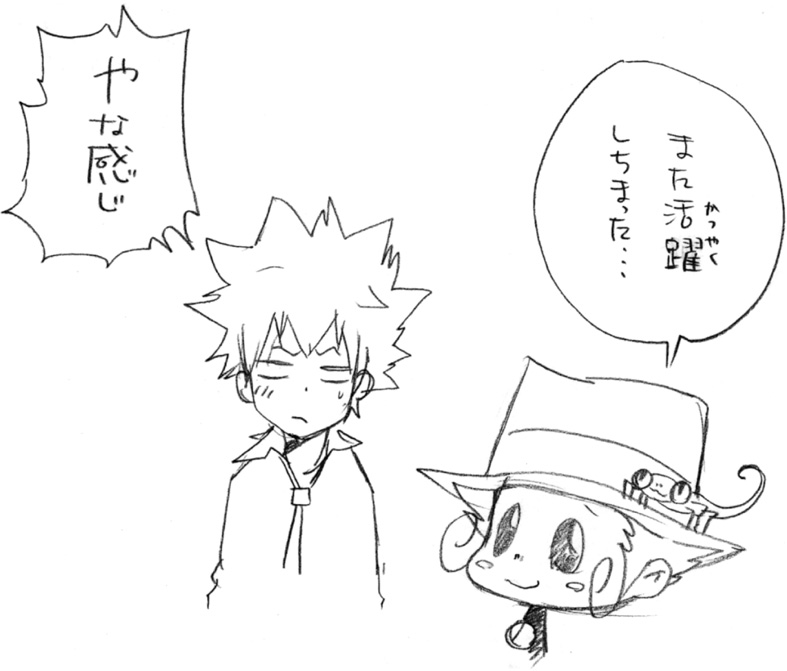
ＰＯＳＴＳＣＲＩＰＴＳ
レンタルした車がたまたま『ボンゴレ』という名前でした。
よく見たら『ボンゴＶ』でした。
...おしい。
おまたせいたしました。
前作『隠し弾１』から一年もたってしまって本当にすみません。
天野先生、ＷＪ前担当・相田様、
そして新担当・吉田様にも、ご迷惑おかけしました。
なによりｊ‐ＢＯＯＫＳ担当の島田様には、本当に頭が下がる思いです。
これからは、毎日10本やってるゲームを９本にへらします。
ええ、へらしますとも。
（ちなみに『フレイムランブル』のクロームは最強だと思う）
というわけで、なんとかお送りできた『隠し弾２』です。
前作同様、みなさまに楽しんで読んでいただければ幸いです。
なお、前作『隠し弾１』には、
本当にたくさんの方から応援のお手紙をいただけました。
そんなみなさまの声があったからこそ、
この『隠し弾２』をお届けすることができたのだと思います。
ありがとうございました。
では、引き続き『隠し弾３』でお会いしましょう！
最後にもう一度だけ――
ありがとうございました
子安秀明
■初出
家庭教師ヒットマンＲＥＢＯＲＮ！ 隠し弾２ Ｘ‐炎 書き下ろし
天野 明 AMANO AKIRA
まんが家。本州出身。
のんびりまったりが好き。
おそばやネコも好き。
最近は積極的にフルーツもとるようにしている。
子安秀明 KOYASU HIDEAKI
書き職人。
現場（ジャンル）を問わず書かせてもらいます。
ジャンプジェイブックスDIGITAL
［家庭教師ヒットマンＲＥＢＯＲＮ！］隠し弾２ Ｘ‐炎
著者 天野明◉子安秀明
© 2017 A.AMANO / H.KOYASU
２０１７年１月31日発行
この電子書籍は、ジャンプジェイブックス「家庭教師ヒットマンＲＥＢＯＲＮ！ 隠し弾２ Ｘ‐炎」
２００９年６月15日発行の第７刷を底本としています。
装 丁 酒井布美子［Banana Grove Studio］
発行者 鈴木晴彦
発行所 株式会社 集英社
東京都千代田区一ツ橋２丁目５番10号
〒１０１－８０５０
［電話］
０３－３２３０－６０８０（読者係）
制作所 大日本印刷株式会社
本作品の全部また一部を無断で複製、転載、改竄、インターネット上に掲載すること、および有償無償に関わらず、本データを第三者に譲渡することを禁じます。なお個人利用の目的であっても、コピーガードを解除しての複製は、法律で禁じられています。